library(tidyverse)2 Probability
The usual touchstone of whether what someone asserts is mere persuasion or at least a subjective conviction, i.e., firm belief, is betting. Often someone pronounces his propositions with such confident and inflexible defiance that he seems to have entirely laid aside all concern for error. A bet disconcerts him. Sometimes he reveals that he is persuaded enough for one ducat but not for ten. For he would happily bet one, but at ten he suddenly becomes aware of what he had not previously noticed, namely that it is quite possible that he has erred. -— Immanuel Kant, Critique of Pure Reason
The central tension, and opportunity, in data science is the interplay between the data and the science, between our empirical observations and the models which we use to understand them. Probability is the language we use to explore that interplay; it connects models to data, and data to models.
What does it mean that Donald Trump had a 30% chance of winning election in the fall of 2016? That there is a 90% probability of rain tomorrow? That the dice at the casino are fair?
Probability quantifies uncertainty. Think of probability as a proportion. The probability of an event occurring is a number from 0 to 1, where 0 means that the event is impossible and 1 means that the event is 100% certain.
Begin with the simplest events: coin flips and dice rolls. The set of all outcomes is the sample space. With fair coins and dice, we know that:
- The probability of rolling a 1 or a 2 is 2/6, or 1/3.
- The probability of rolling a 1, 2, 3, 4, 5, or 6 is 1.
- The probability of flipping a coin and getting tails is 1/2.
If the probability of an outcome is unknown, we will often refer to it as an unknown parameter, something which we might use data to estimate. We usually use Greek letters to refer to parameters. Whenever we are talking about a specific probability (represented by a single value), we will use \(\rho\) (the Greek letter “rho” but spoken aloud as “p” by us) with a subscript which specifies the exact outcome of which it is the probability. For instance, \(\rho_h = 0.5\) denotes the probability of getting heads on a coin toss when the coin is fair. \(\rho_t\) — spoken as “PT” or “P sub T” or “P tails” — denotes the probability of getting tails on a coin toss. This notation can become annoying if the outcome whose probability we seek is less concise. For example, we might write the probability of rolling a 1, 2 or 3 using a fair six-sided dice as:
\[ \rho_{dice\ roll\ is\ 1,\ 2\ or\ 3} = 0.5 \]
We will rarely write out the full definition of an event along with the \(\rho\) symbol. The syntax is just too ugly. Instead, we will define an event a as the case when one rolled dice equals 1, 2 or 3 and, then, write
\[\rho_a = 0.5\]
A random variable is a function which produces a value from a sample set. A random variable can be either discrete — where the sample set has a limited number of members, like H or T for the result of a coin flip, or 2, 3, …, 12 for the sum of two dice — or continuous (any value within a range). Probability is a claim about the value of a random variable, i.e., that you have a 50% probability of getting a 1, 2 or 3 when you roll a fair dice.
We usually use capital letters for random variables. So, \(C\) might be our symbol for the random variable which is a coin toss and \(D\) might be our symbol for the random variable which is the sum of two dice. When discussing random variables in general, or when we grow tired of coming up with new symbols, we will use \(Y\).
Small letters refer to a single outcome or result from a random variable. \(c\) is the outcome from one coin toss. \(d\) is the result from one throw of the dice. The value of the outcome must come from the sample space. So, \(c\) can only take on two possible values: heads or tails. When discussing random variables in general, we use \(y\) to refer to one outcome of the random variable \(Y\). If there are multiple outcomes — if we have, for example, flipped the coin multiple times — then we use subscripts to indicate the separate outcomes: \(y_1\), \(y_2\), and so on. The symbol for an arbitrary outcome is \(y_i\), where \(i\) ranges from 1 through \(N\), the total number of events or experiments for which an outcome \(y\) was produced.
The only package we need in this chapter is tidyverse.
To understand probability more fully, we first need to understand distributions.
2.1 Distributions
A variable in a tibble is a column, a vector of values. We sometimes refer to this vector as a “distribution.” This is somewhat sloppy in that a distribution can be many things, most commonly a mathematical formula. But, strictly speaking, a “frequency distribution” or an “empirical distribution” is a list of values, so this usage is not unreasonable.
2.1.1 Scaling distributions
Consider the vector which is the result of rolling one dice 10 times.
ten_rolls <- c(5, 5, 1, 5, 4, 2, 6, 2, 1, 5)There are other ways of storing the data in this vector. Instead of reporting every observation, we could record the number of times each value appears or the percentage of the total which this number accounts for.
| Distribution of Ten Rolls of a Fair Dice | ||
| Counts and percentages reflect the same information | ||
| Outcome | Count | Percentage |
|---|---|---|
| 1 | 2 | 0.2 |
| 2 | 2 | 0.2 |
| 4 | 1 | 0.1 |
| 5 | 4 | 0.4 |
| 6 | 1 | 0.1 |
In this case, with only 10 values, it is actually less efficient to store the data like this. But what happens when we have 1,000 rolls?
| Distribution of One Thousand Rolls of a Fair Dice | ||
| Counts and percentages reflect the same information | ||
| Outcome | Count | Percentage |
|---|---|---|
| 1 | 190 | 0.190 |
| 2 | 138 | 0.138 |
| 3 | 160 | 0.160 |
| 4 | 173 | 0.173 |
| 5 | 169 | 0.169 |
| 6 | 170 | 0.170 |
Instead of keeping around a vector of length 1,000, we can just keep 12 values — the 6 possible outcomes and their frequency — without losing any information.
Two distributions can be identical even if they are of very different lengths. Let’s compare our original distribution of 10 rolls of the dice with another distribution which just features 100 copies of those 10 rolls.
more_rolls <- rep(ten_rolls, 100)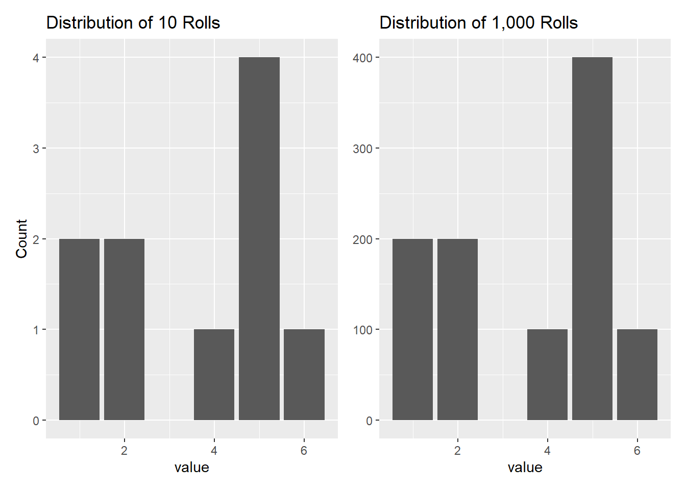
The two graphs have the exact same shape because, even though the vectors are of different lengths, the relative proportions of the outcomes are identical. In some sense, both vectors are from the same distribution. Relative proportions, not the total counts, are what matter.
2.1.2 Normalizing distributions
If two distributions have the same shape, then they only differ by the labels on the y-axis. There are various ways of “normalizing” distributions so as to place them all the same scale. The most common scale is one in which the area under the distribution adds to 1, e.g., 100%. For example, we can transform the above plots:
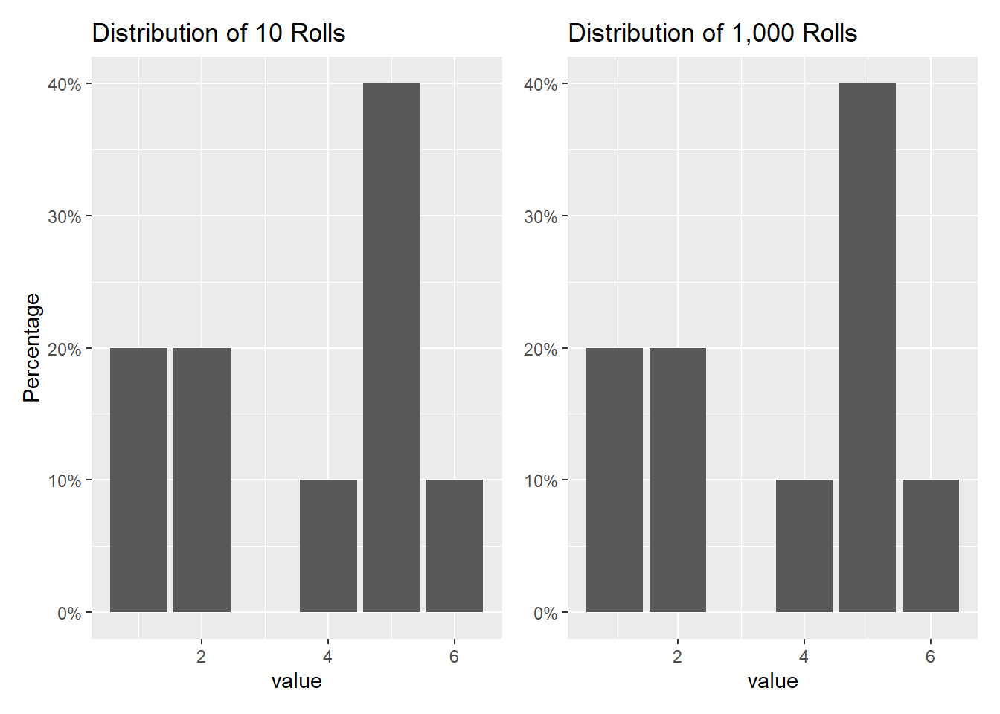
We sometimes refer to a distribution as “unnormalized” if the area under the curve does not add up to 1.
2.1.3 Simulating distributions
There are two distinct concepts: a distribution and a set values drawn from that distribution. But, in typical usage, we employ “distribution” for both. When given a distribution (meaning a vector of numbers), we often use geom_histogram() or geom_density() to display it. But, sometimes, we don’t want to look at the whole thing. We just want some summary measures which report the key aspects of the distribution. The two most important attributes of a distribution are its center and its variation around that center.
We use summarize() to calculate statistics for a variable, a column, a vector of values, or a distribution. Note the language sloppiness. For the purposes of this book, “variable,” “column,” “vector,” and “distribution” all mean the same thing. Other popular statistical functions include: mean(), median(), min(), max(), n() and sum(). Functions which may be new to you include three measures of the “spread” of a distribution: sd() (the standard deviation), mad() (the scaled median absolute deviation) and quantile(), which is used to calculate an interval which includes a specified proportion of the values.
Think of the distribution of a variable as an urn from which we can pull out, at random, values for that variable. Drawing a thousand or so values from that urn, and then looking at a histogram, can show where the values are centered and how they vary. Because people are sloppy, they will use the word distribution to refer to at least three related entities:
- the (imaginary!) urn from which we are drawing values.
- all the values in the urn
- all the values which we have drawn from the urn, whether that be 10 or 1,000
Sloppiness in the usage of the word distribution is universal. However, keep three distinct ideas separate:
The unknown true distribution which, in reality, generates the data which we see. Outside of stylized examples in which we assume that a distribution follows a simple mathematical formula, we will never have access to the unknown true distribution. We can only estimate it. This unknown true distribution is often referred to as the data generating mechanism, or DGM. It is a function or black box or urn which produces data. We can see the data. We can’t see the urn.
The estimated distribution which, we think, generates the data which we see. Again, we can never know the unknown true distribution. But, by making some assumptions and using the data we have, we can estimate a distribution. Our estimate may be very close to the true distribution. Or it may be far away. The main task of data science to to create and use these estimated distributions. Almost always, these distributions are instantiated in computer code. Just as there is a true data generating mechanism associated with the (unknown) true distribution, there is an estimated data generating mechanism associated with the estimated ditribution.
A vector of numbers drawn from the estimated distribution. Both true and estimated distributions can be complex animals, difficult to describe accurately and in detail. But a vector of numbers drawn from a distribution is easy to understand and use. So, in general, we work with vectors of numbers. When someone — either a colleague or a piece of R code — creates a distribution which we want to use to answer a question, we don’t really want the distribution itself. Rather, we want a vectors of “draws” from that distribution. Vectors are easy to work with! Complex computer code is not.
Again, people (including us!) will often be sloppy and use the same word, “distribution,” without making it clear whether they are talking about the true distribution, the estimated distribution, or a vector of draws from the estimated distribution. The same sloppiness applies to the use of the term data generating mechanism. Try not to be sloppy.
Much of the rest of the Primer involves learning how to work with distributions, which generally means working with the draws from those distributions. Fortunately, the usual rules of arithmetic apply. You can add/subtract/multiply/divide distributions by working with draws from those distributions, just as you can add/subtract/multiply/divide regular numbers.
2.2 Probability distributions

For the purposes of this Primer, a probability distribution is a mathematical object which maps a set of outcomes to probabilities, where each distinct outcome has a chance of occurring between 0 and 1 inclusive. The probabilities must sum to 1. The set of possible outcomes, i.e., the sample space — heads or tails for the coin, 1 through 6 for a single dice, 2 through 12 for the sum of a pair of dice — can be either discrete or continuous. Remember, discrete data can only take on certain values. Continuous data, like height and weight, can take any value within a range. The set of outcomes is the domain of the probability distribution. The range is the associated probabilities.
Assume that a probability distribution is created by a probability function, a set function which maps outcomes to probabilities. The concept of a “probability function” is often split into two categories: probability mass functions (for discrete random variables) and probability density functions (for continuous random variables). As usual, we will be a bit sloppy, using the term probability distribution for both the mapping itself and for the function which creates the mapping.
We discuss three types of probability distributions: empirical, mathematical, and posterior.
The key difference between a distribution, as we have explored them in Section 2.1, and a probability distribution is the requirement that the sum of the probabilities of the individual outcomes must be exactly 1. There is no such requirement for a distribution in general. But any distribution can be turned into a probability distribution by “normalizing” it. In this context, we will often refer to a distribution which is not (yet) a probability distribution as an “unnormalized” distribution.
Pay attention to notation. Recall that when we are talking about a specific probability (represented by a single value), we will use \(\rho\) (the Greek letter “rho”) with a subscript which specifies the exact outcome of which it is the probability. For instance, \(\rho_h = 0.5\) denotes the probability of getting heads on a coin toss when the coin is fair. \(\rho_t\) — spoken as “PT” or “P sub T” or “P tails” — denotes the probability of getting tails on a coin toss. However, when we are referring to the entire probability distribution over a set of outcomes, we will use \(P()\). For example, the probability distribution of a coin toss is \(P(\text{coin})\). That is, \(P(\text{coin})\) is composed of the two specific probabilities (50% and 50%) mapped from the two values in the domain (Heads and Tails). Similarly, \(P(\text{sum of two dice})\) is the probability distribution over the set of 11 outcomes (2 through 12) which are possible when you take the sum of two dice. \(P(\text{sum of two dice})\) is made up of 11 numbers — \(\rho_2\), \(\rho_3\), …, \(\rho_{12}\) — each representing the unknown probability that the sum will equal their value. That is, \(\rho_2\) is the probability of rolling a 2.
2.2.1 Flipping a coin
Data science problems start with a question. Example:
What are the chances of getting three heads in a row when flipping a fair coin?
Questions are answered with the help of probability distributions.
An empirical distribution is based on data. Think of this as the probability distribution created by collecting data in the real world or by running a simulation on your computer. In theory, if we increase the number of coins we flip (either in reality or via simulation), the empirical distribution will look more and more similar to the mathematical distribution. The mathematical distribution is the Platonic form. The empirical distribution will often look like the mathematical probability distribution, but it will rarely be exactly the same.
In this simulation, there are 44 heads and 56 tails. The outcome will vary every time we run the simulation, but the proportion of heads to tails should not be too different if the coin is fair.

A mathematical distribution is based on a mathematical formula. Assuming that the coin is perfectly fair, we should, on average, get heads as often as we get tails.
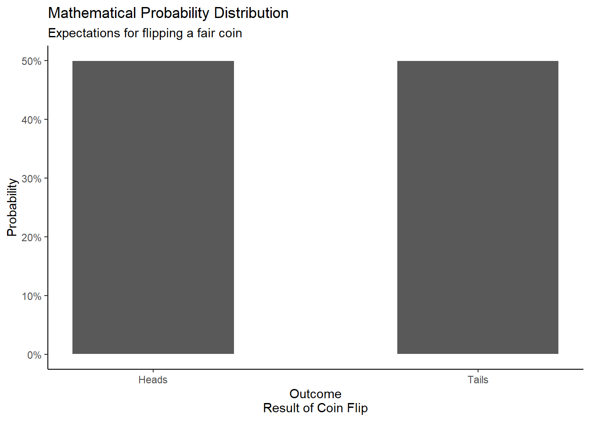
The distribution of a single observation is described by this formula.
\[ P(Y = y) = \begin{cases} 1/2 &\text{for }y= \text{Heads}\\ 1/2 &\text{for }y= \text{Tails} \end{cases}\] We sometimes do not know that the probability of heads and the probability of tails both equal 50%. In that case, we might write:
\[ P(Y = y) = \begin{cases} \rho_H &\text{for }y= \text{Heads}\\ \rho_T &\text{for }y= \text{Tails} \end{cases}\]
Yet, we know that, by definition, \(\rho_H + \rho_T = 1\), so we can rewrite the above as:
\[ P(Y = y) = \begin{cases} \rho_H &\text{for }y= \text{Heads}\\ 1- \rho_H &\text{for }y= \text{Tails} \end{cases}\]
Coin flipping (and related scenarios with only two possible outcomes) are such common problems, that the notation is often simplified further, with \(\rho\) understood, by convention, to be the probability of heads. In that case, we can write the mathematical distribution is two canonical forms:
\[P(Y) = Bernoulli(\rho)\] and
\[y_i \sim Bernoulli(\rho)\] All five of these versions mean the same thing! The first four describe the mathematical probability distribution for a fair coin. The capital \(Y\) within the \(P()\) indicates a random variable. The fifth highlights one “draw” from that random variable, hence the lower case \(y\) and the subscript \(i\).
Most probability distributions do not have special names, which is why we will use the generic symbol \(P\) to refer to them. But some common probability distributions do have names, like “Bernoulli” in this case.
If the mathematical assumptions are correct, then, as your sample size increases, the empirical probability distribution will look more and more like the mathematical distribution.
A posterior distribution is based on beliefs and expectations. It displays your beliefs about things you can’t see right now. You may have posterior distributions for outcomes in the past, present, or future.
In the case of the coin toss, the posterior distribution changes depending on your beliefs. For instance, let’s say your friend brought a coin to school and asked to bet you. If the result is heads, you have to pay them $5. In that case, your posterior probability distribution might look like this:
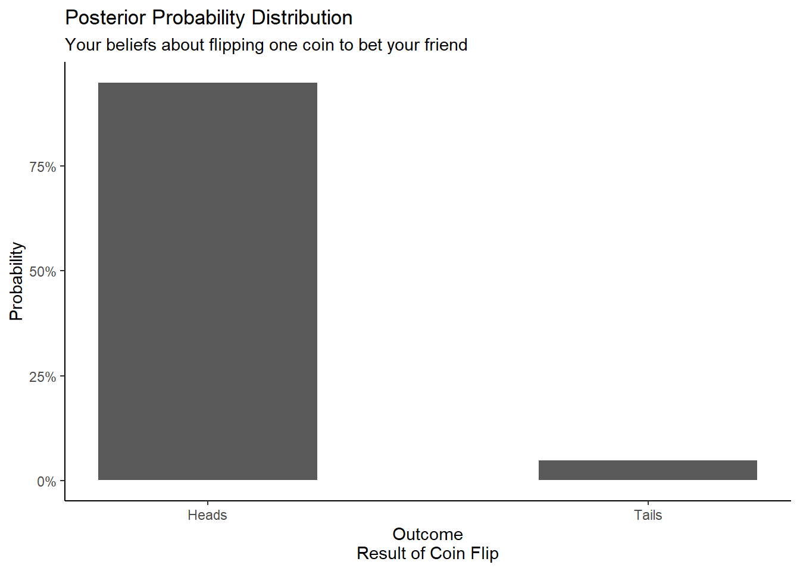
The fact that your friend wants to bet on heads suggests to you that the coin is not fair. Does it prove that the coin is unfair? No! Much depends on the sort of person you think your friend is. Your posterior probability distribution is your opinion, based on your experiences and beliefs. My posterior probability distribution will often be (very) different from yours.
The full terminology is mathematical (or empirical or posterior) probability distribution. But we will often shorten this to just mathematical (or empirical or posterior) distribution. The word “probability” is understood, even if it is not present.
Recall the question with which we started this section: What are the chances of getting three heads in a row when flipping a fair coin? To answer this question, we need to use a probability distribution as our data generating mechanism. Fortunately, the rbinom() function allows us to generate the results for coin flips. For example:
rbinom(n = 10, size = 1, prob = 0.5) [1] 1 1 0 1 1 0 0 0 0 0generates the results of 10 coin flips, where a result of heads is presented as 1 and tails as 0. With this tool, we can generate 1,000 draws from our experiment:
tibble(toss_1 = rbinom(n = 1000, size = 1, prob = 0.5),
toss_2 = rbinom(n = 1000, size = 1, prob = 0.5),
toss_3 = rbinom(n = 1000, size = 1, prob = 0.5))# A tibble: 1,000 × 3
toss_1 toss_2 toss_3
<int> <int> <int>
1 0 1 1
2 0 1 1
3 0 1 0
4 0 0 1
5 1 1 0
6 1 0 1
7 1 0 0
8 1 0 1
9 0 0 1
10 0 1 1
# ℹ 990 more rowsBecause the flips are independent, we can consider each row to be a draw from the experiment. Then, we simply count up the proportion of experiments in which resulted in three heads.
tibble(toss_1 = rbinom(n = 1000, size = 1, prob = 0.5),
toss_2 = rbinom(n = 1000, size = 1, prob = 0.5),
toss_3 = rbinom(n = 1000, size = 1, prob = 0.5)) |>
mutate(three_heads = toss_1 + toss_2 + toss_3 == 3) |>
summarize(chance = mean(three_heads))# A tibble: 1 × 1
chance
<dbl>
1 0.104This is close to the “correct” answer of \(1/8\)th. If we increase the number of draws, we will get closer to the “truth.” The reason for the quotation marks around “correct” and “truth” is that we are uncertain. We don’t know the true probability distribution for this coin. If this coin is a trick coin — like the one we expect our friend to have brought to school — then the odds of three heads in a row would be much higher:
tibble(toss_1 = rbinom(n = 1000, size = 1, prob = 0.95),
toss_2 = rbinom(n = 1000, size = 1, prob = 0.95),
toss_3 = rbinom(n = 1000, size = 1, prob = 0.95)) |>
mutate(three_heads = toss_1 + toss_2 + toss_3 == 3) |>
summarize(chance = mean(three_heads))# A tibble: 1 × 1
chance
<dbl>
1 0.87This is our first example of using a data generating mechanism — meaning rbinom() — to answer a question. We will see many more in the chapters to come.
2.2.2 Rolling two dice
Data science begins with a question:
What is the probability of rolling a 7 or an 11 with a pair of dice?
We get an empirical distribution by rolling two dice a hundred times, either by hand or with a computer simulation. The result is not identical to the mathematical distribution because of the inherent randomness of the real world and/or of simulation.
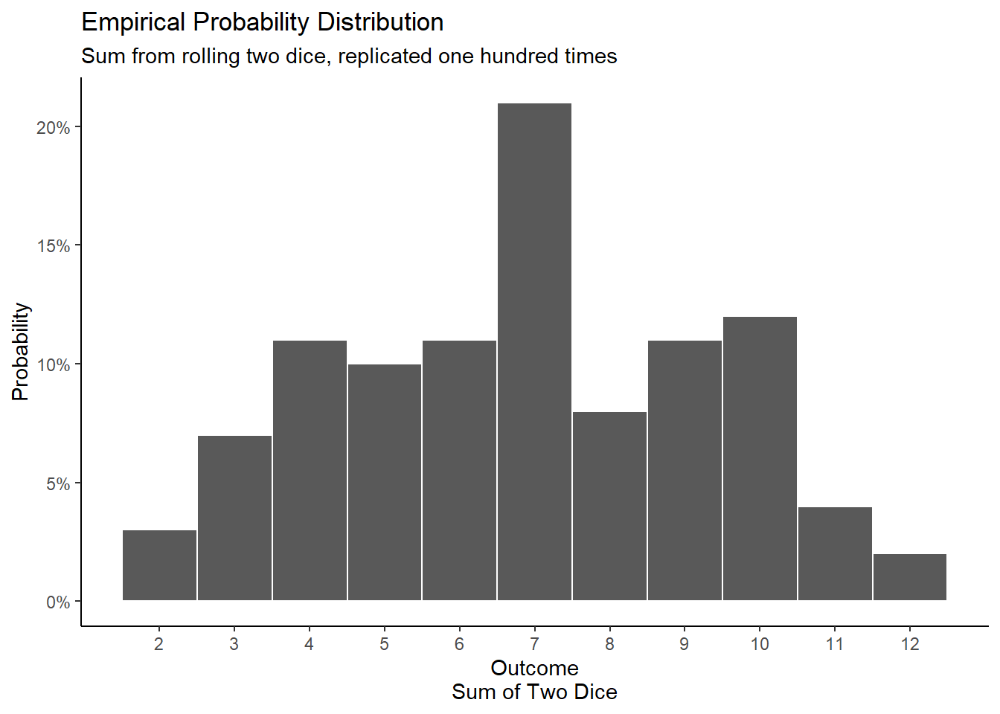
We might consider labeling the y-axis in plots of empirical distributions as “Proportion” rather than “Probability” since it is an actual proportion, calculated from real (or simulated) data. We will keep it as “Probability” since we want to emphasize the parallels between mathematical, empirical and posterior probability distributions.
Our mathematical distribution tells us that, with a fair dice, the probability of getting 1, 2, 3, 4, 5, and 6 are equal: there is a 1/6 chance of each. When we roll two dice at the same time and sum the numbers, the values closest to the middle are more common than values at the edge because there are more combinations of numbers that add up to the middle values.
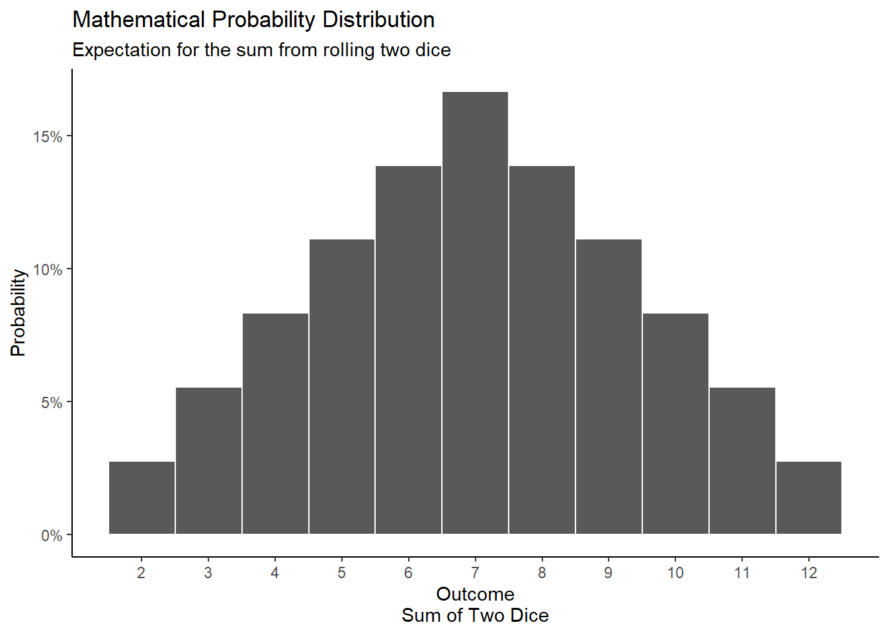
\[ P(Y = y) = \begin{cases} \dfrac{y-1}{36} &\text{for }y=1,2,3,4,5,6 \\ \dfrac{13-y}{36} &\text{for }y=7,8,9,10,11,12 \\ 0 &\text{otherwise} \end{cases} \]
The posterior distribution for rolling two dice a hundred times depends on your beliefs. If you take the dice from your Monopoly set, you have reason to believe that the assumptions underlying the mathematical distribution are true. However, if you walk into a crooked casino and a host asks you to play craps, you might be suspicious, just as in the coin flip example above. The word “suspicious” means that you suspect that the data generating mechanism for these dice is not like that for honest dice. For example, in craps, a “come-out” roll of 7 and 11 is a “natural,” resulting in a win for the “shooter” and a loss for the casino. You might expect those numbers to occur less often than they would with fair dice. Meanwhile, a come-out roll of 2, 3 or 12 is a loss for the shooter. You might also expect values like 2, 3 and 12 to occur more frequently. Your posterior distribution might look like this:
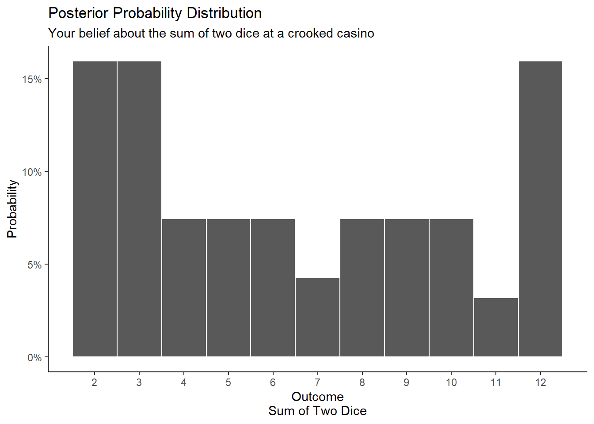
Someone less suspicious of the casino would have a posterior distribution which looks more like the mathematical distribution.
We began this section with a question about the probability (or odds) of rolling a 7 or 11 — i.e., a “natural” — with a pair of dice. The answer to the question depends on whether or not we think the dice are fair. In other words, we need to know which distribution to use to answer the question.
Assume that the dice are fair. In that case, we can create a data generating mechanism by hand. (Alas, there is not a built-in R function for dice like there is for coin flips with rbinom().)
set.seed(7)
# Creating a variable like rolls makes our code easier to read and modify. Of
# course, we could just hard code the 4 into the size argument for each of the
# two calls to sample, but that is much less convenient.
rolls <- 4
# The details of the code matter. If we don't have replace = TRUE, sample will
# only use each of the 6 possible values once. That might be OK if we are just
# rolling the dice 4 times, but it won't work for thousands of rolls.
tibble(dice_1 = sample(x = 1:6, size = rolls, replace = TRUE),
dice_2 = sample(x = 1:6, size = rolls, replace = TRUE)) |>
mutate(result = dice_1 + dice_2) |>
mutate(natural = ifelse(result %in% c(7, 11), TRUE, FALSE))# A tibble: 4 × 4
dice_1 dice_2 result natural
<int> <int> <int> <lgl>
1 2 2 4 FALSE
2 3 6 9 FALSE
3 4 3 7 TRUE
4 2 6 8 FALSE This code is another data generating mechanism or dgm. It allows us to simulate the distribution of the results from rolling a pair of fair dice. To answer our question, we simply increase the number of rolls and calculate the proportion of rolls which result in a 7 or 11.
rolls <- 100000
# We probably don't need 100,000 rolls, but this code is so fast that it does
# not matter. Generally 1,000 (or even 100) draws from the data generating
# mechanism is enough for most practical purposes.
tibble(dice_1 = sample(x = 1:6, size = rolls, replace = TRUE),
dice_2 = sample(x = 1:6, size = rolls, replace = TRUE)) |>
mutate(result = dice_1 + dice_2) |>
summarize(natural_perc = mean(result %in% c(7, 11)))# A tibble: 1 × 1
natural_perc
<dbl>
1 0.221The probability of rolling either a 7 or an 11 with a pair of fair dice is about 22%.
2.2.3 Presidential elections
Data science begins with a question:
What is the probability that the Democratic candidate will win the Presidential election?
Consider the probability distribution for a political event, like a presidential election. We want to know the probability that Democratic candidate wins X electoral votes, where X comes from the range of possible outcomes: 0 to 538. (The total number of electoral votes in US elections since 1964 is 538.)
The empirical distribution in this case would involve counting the number of electoral votes that the Democratic candidate won in each of the Presidential elections in the last 50 years or so. For the empirical distribution, we create a tibble with electoral vote results from past elections. Looking at elections since 1964, we can observe that the number of electoral votes that the Democratic candidate received in each election is different.
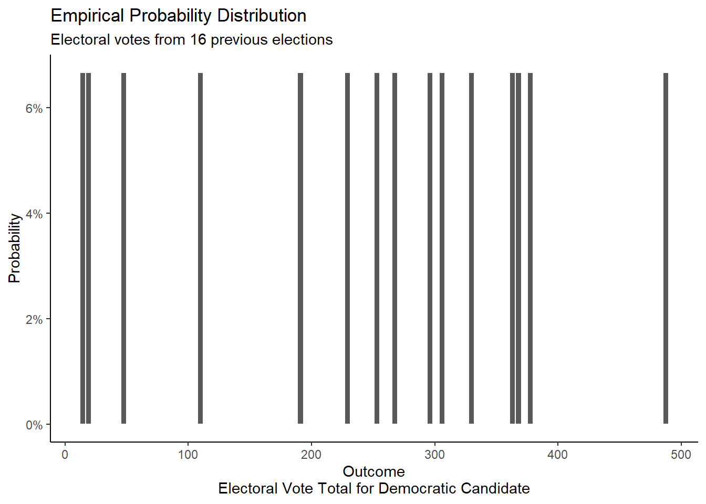
Given that we only have 15 observations, it is difficult to draw conclusions or make predictions based off of this empirical distribution. But “difficult” does not mean “impossible.” For example, if someone, more than a year before the election, offered to bet us 50/50 that the Democratic candidate was going to win more than 475 electoral votes, we would take the bet. After all, this outcome has only happened once in the last 15 elections, so a 50/50 bet seems like a great deal.
We can build a mathematical distribution for X which assumes that the chances of the Democratic candidate winning any given state’s electoral votes is 0.5 and that the results from each state are independent.
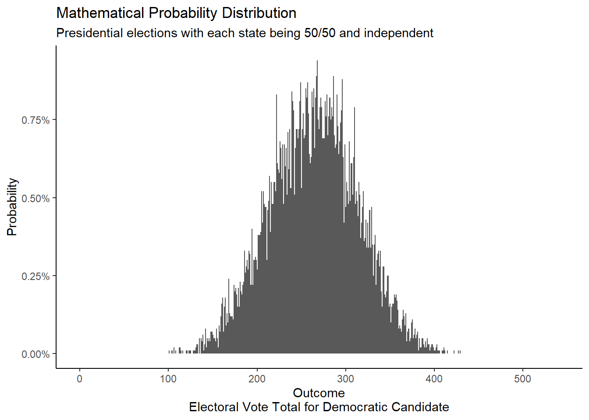
If our assumptions about this mathematical distribution are correct — they are not! — then, as the sample size increase, the empirical distribution should look more and more similar to our mathematical distribution.
However, the data from past elections is more than enough to demonstrate that the assumptions of our mathematical probability distribution do not work for electoral votes. The model assumes that the Democrats have a 50% chance of receiving each of the 538 votes. Just looking at the mathematical probability distribution, we can observe that receiving 13 or 17 or 486 votes out of 538 would be extreme and almost impossible if the mathematical model were accurate. However, our empirical distribution shows that such extreme outcomes are quite common. Presidential elections have resulted in much bigger victories or defeats than this mathematical distribution seems to allow for, thereby demonstrating that our assumptions are false.
The posterior distribution of electoral votes is a popular topic, and an area of strong disagreement, among data scientists. Consider this posterior from FiveThirtyEight.
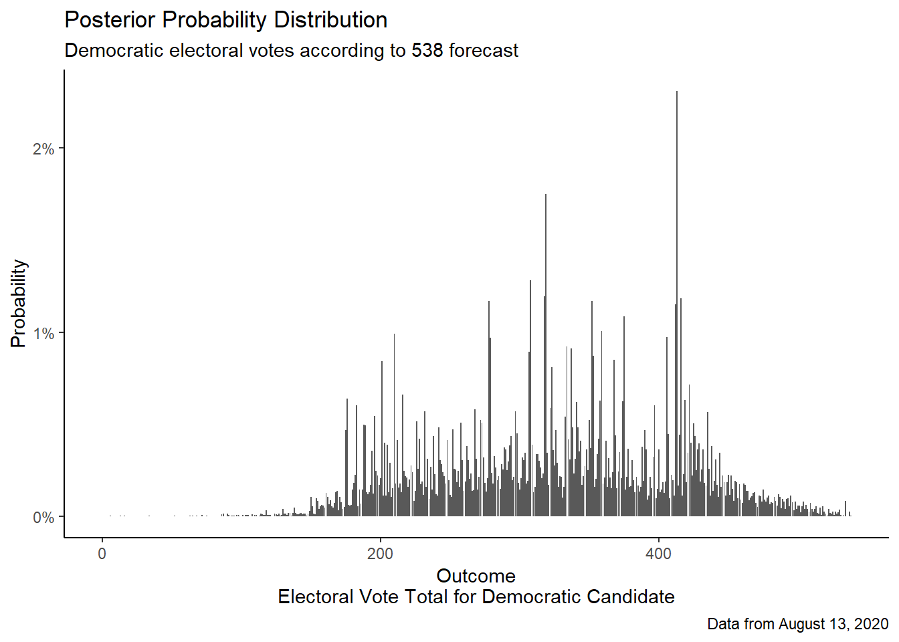
Below is a posterior probability distribution from the FiveThirtyEight website for August 13, 2020. This was created using the same data as the above distribution, but is displayed differently. For each electoral result, the height of the bar represents the probability that a given event will occur. However, there are no labels on the y-axis telling us what the specific probability of each outcome is. And that is OK! The specific values are not that useful. If we removed the labels on our own y-axes, would it matter? Probably not. Anytime there are many possible outcomes — 539, in this case — we stop looking at specific outcomes and, instead, look at where most of the “mass” of the distribution lies.

Below is the posterior probability distribution from The Economist, also from August 13, 2020. This looks confusing at first because they chose to combine the axes for Republican and Democratic electoral votes. The Economist was less optimistic, relative to FiveThirtyEight, about Trump’s chances in the election.

These two models, built by smart people using similar data sources, have reached fairly different conclusions. Data science is difficult! There is not one “right” answer. Real life is not a problem set.

There are many questions you could explore with posterior distributions. They can relate to the past, present, or future.
- Past: How many electoral votes would Hilary Clinton have won if she had picked a different VP?
- Present: What are the total campaign donations from Harvard faculty?
- Future: How many electoral votes will the Democratic candidate for president win in 2024?
2.2.4 Height
Question: What is the height of the next adult male we will meet?
The three examples above are all discrete probability distributions, meaning that the outcome variable can only take on a limited set of values. A coin flip has two outcomes. The sum of a pair of dice has 11 outcomes. The total electoral votes for the Democratic candidate has 539 possible outcomes. In the limit, we can also create continuous probability distributions which have an infinite number of possible outcomes. For example, the average height for an American male could be any real number between 0 inches and 100 inches. (Of course, an average value anywhere near 0 or 100 is absurd. The point is that the average could be 68.564, 68.5643, 68.56432 68.564327, or any real number.)
All the characteristics for discrete probability distributions which we reviewed above apply just as much to continuous probability distributions. For example, we can create mathematical, empirical and posterior probability distributions for continuous outcomes just as we did for discrete outcomes.
The empirical distribution involves using data from the National Health and Nutrition Examination Survey (NHANES).
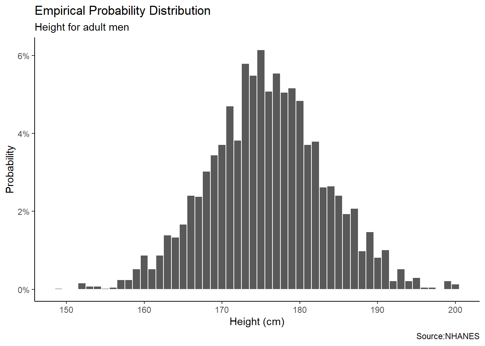
Mathematical distribution is completely based on mathematical formula and assumptions, as in the coin flip example. In the coin-flip example, we assumed that the coin was perfectly fair, meaning that the probability of landing on heads or tails was equal. In this case, we make three assumptions. First, a male height follows a Normal distribution. Second, the average height of men is 175 cm. Third, the standard deviation for male height is 9 cm. We can create a Normal distribution using the rnorm() function with these two parameter values.
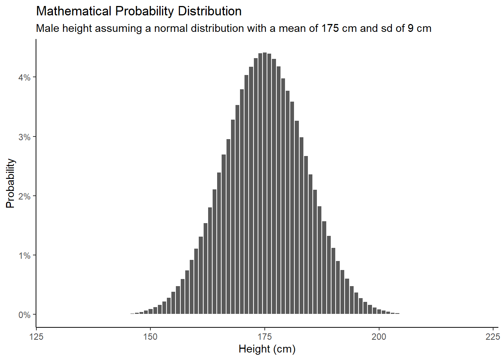
Again, the Normal distribution which is a probability distribution that is symmetric about the mean described by this formula.
\[y_i \sim N(\mu, \sigma^2)\]
Each value \(y_i\) is drawn from a Normal distribution with parameters \(\mu\) for the mean and \(\sigma\) for the standard deviation. If the assumptions are correct, then, as our sample size increases, the empirical probability distribution will look more and more like the mathematical distribution.
The posterior distribution for heights depends on the context. Are we considering all the adult men in America? In that case, our posterior would probably look a lot like the empirical distribution using NHANES data. If we are being asked about the distribution of heights among players in the NBA, then our posterior might look like:
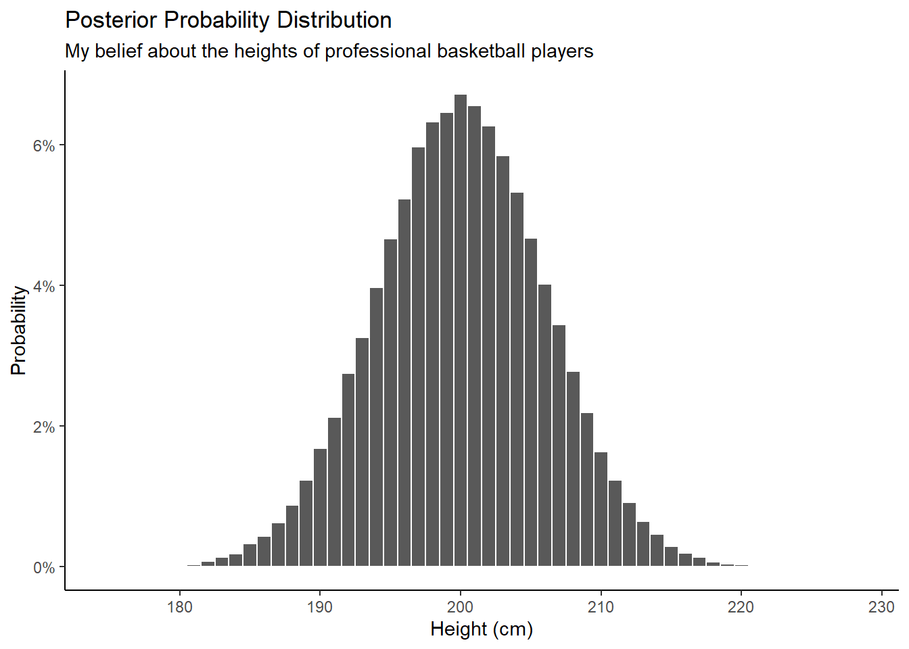
Caveats:
Continuous variables are a myth. Nothing that can be represented on a computer is truly continuous. Even something which appears continuous, like height, actually can only take on a (very large) set of discrete variables.
The math of continuous probability distributions can be tricky. Read a book on mathematical probability for all the messy details. Little of that matters in applied work.
The most important difference is that, with discrete distributions, it makes sense to estimate the probability of a specific outcome. What is the probability of rolling a 9? With continuous distributions, this makes no sense because there are an infinite number of possible outcomes. With continuous variables, we only estimate intervals.
Don’t worry about the distinctions between discrete and continuous outcomes, or between the discrete and continuous probability distributions which we will use to summarize our beliefs about those outcomes. The basic intuition is the same in both cases.
2.2.5 Joint distributions
Recall that \(P(\text{coin})\) is the probability distribution for the result of a coin toss. It includes two parts, the probability of heads (\(\rho_h\)) and the probability of tails (\(\rho_t\)). This is a univariate distribution because there is only one outcome, which can be heads or tails. If there is more than one outcome, then we have a joint distribution.
Joint distributions are also mathematical objects that cover a set of outcomes, where each distinct outcome has a chance of occurring between 0 and 1 and the sum of all chances must equal 1. The key to a joint distribution is that it measures the chance that both outcome \(a\) from the set of events A and outcome \(b\) from the set of events B will occur. The notation is \(P(A, B)\).
Let’s say that you are rolling two six-sided dice simultaneously. Dice 1 is weighted so that there is a 50% chance of rolling a 6 and a 10% chance of each of the other values. Dice 2 is weighted so there is a 50% chance of rolling a 5 and a 10% chance of rolling each of the other values. Let’s roll both dice 1,000 times. In previous examples involving two dice, we cared about the sum of results and not the outcomes of the first versus the second dice of each simulation. With a joint distributions, the outcomes for individual dice matter; so instead of 11 possible outcomes on the x-axis of our distribution plot (ranging from 2 to 12), we have 36 outcomes. Furthermore, a 2D probability distribution is not sufficient to represent all of the variables involved, so the joint distribution for this example is displayed using a 3D plot.
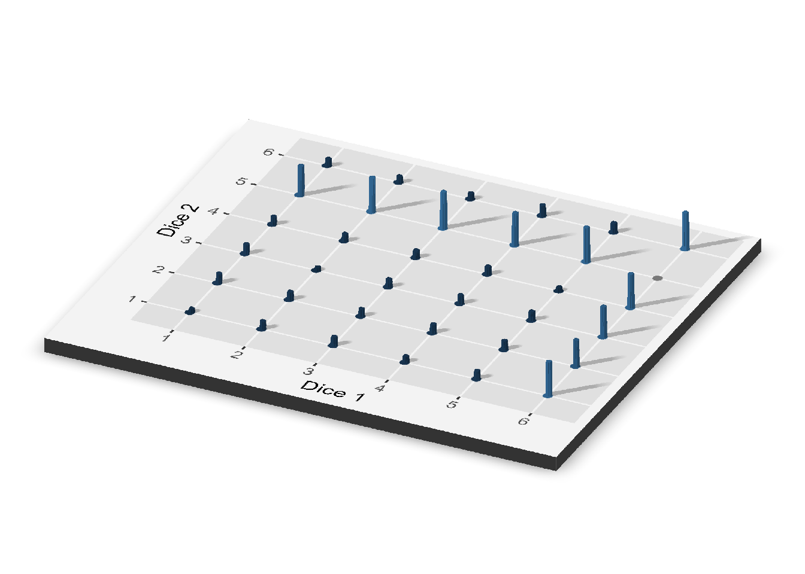
2.2.6 Conditional distrubutions
Imagine that 60% of people in a community have a disease. A doctor develops a test to determine if a random person has the disease. However, this test isn’t 100% accurate. There is an 80% probability of correctly returning positive if the person has the disease and 90% probability of correctly returning negative if the person does not have the disease.
The probability of a random person having the disease is 0.6. Since each person either has the disease or doesn’t (those are the only two possibilities), the probability that a person does not have the disease is \(1 - 0.6 = 0.4\).

If a person has the disease, then we go up the top branch. The probability of an infected person testing positive is 0.8 because the test is 80% sure of correctly returning positive when the person has the disease.
By the same logic, if a person does not have the disease, we go down the bottom branch. The probability of the person incorrectly testing positive is 0.1.
We decide to go down the top branch if our random person has the disease. We go down the bottom branch if they do not. This is conditional probability. The probability of testing positive is dependent on whether the person has the disease.
How would you express this in statistical notation? \(P(A|B)\) is the same thing as the probability of A given B. \(P(A|B)\) means the probability of A if we know for sure the value of B. Note that \(P(A|B)\) is not the same thing as \(P(B|A)\).
There are three main categories of probability distributions: univariate, joint and condictional. \(p(A)\) is the probability distribution for event A. This is a univariate probability distribution because there is only one random variable. \(p(A, B)\) is the joint probability distribution of A and B. \(p(A | B)\) is the conditional probability distribution of A given that B has taken on a specific value. This is often written as \(p(A | B = b)\).
2.3 List-columns and map functions
We need to expand our collection of R tricks by learning about list-columns and map_* functions. Recall that a list is different from an atomic vector. In atomic vectors, each element of the vector has one value. Lists, however, can contain vectors, and even more complex objects, as elements.
x <- list(c(4, 16, 9), c("A", "Z"))
x[[1]]
[1] 4 16 9
[[2]]
[1] "A" "Z"x is a list with two elements. The first element is a numeric vector of length 3. The second element is a character vector of length 2. We use [[]] to extract specific elements.
x[[1]][1] 4 16 9There are a number of built-in R functions that output lists. For example, ggplot objects store all of the plot information in a list. Any function that returns multiple values can be used to create a list output by wrapping that returned object with list().
x <- rnorm(10)
# range() returns the min and max of the argument
range(x)[1] -1.841155 1.098223# We can create a tibble which includes the results of range(x)
tibble(col_1 = list(range(x))) # A tibble: 1 × 1
col_1
<list>
1 <dbl [2]>Notice this is a 1-by-1 tibble with one observation, which is a list of one element. Voila! You have just created a list-column.
If a function returns multiple values as a vector, like range() does, you must use list() as a wrapper if you want to create a list-column.
A list column is a column of your data which is a list rather than an atomic vector. As with stand-alone list objects, you can pipe to str() to examine the column.
# tibble() is what we use to generate a tibble, it acts sort of like the
# mutate(), but mutate() needs a data frame to add new column, tibble can
# survive on itself.
tibble(col_1 = list(range(x))) |>
str()tibble [1 × 1] (S3: tbl_df/tbl/data.frame)
$ col_1:List of 1
..$ : num [1:2] -1.84 1.1We can use map_* functions to both create a list-column and then, much more importantly, work with that list-column afterwards.
# .x is col_1 from tibble and ~ sum(.) is the formula
tibble(col_1 = list(range(x))) |>
mutate(col_2 = map_dbl(col_1, ~ sum(.))) |>
str()tibble [1 × 2] (S3: tbl_df/tbl/data.frame)
$ col_1:List of 1
..$ : num [1:2] -1.84 1.1
$ col_2: num -0.743map_* functions, like map_dbl() in this example, take two key arguments, .x (the data which will be acted on) and .f (the function which will act on this data). Here, .x is the data in col_1, which is a list-column. .f is the function sum(). However, we can not simply write map_dbl(col_1, sum). Instead, each use of map_* functions requires the use of a tilde — a ~ — to indicate the start of the function and the use of a dot — a . — to specify where the data goes in the function.
map_* functions are a family of functions, with the suffix specifying the type of the object to be returned. map() itself returns a list. map_dbl() returns a double. map_int() returns an integer. map_chr() returns a character, and so on. Example:
tibble(ID = 1) |>
mutate(col_1 = map(ID, ~range(rnorm(10)))) |>
mutate(col_2 = map_dbl(col_1, ~ sum(.))) |>
mutate(col_3 = map_int(col_1, ~ length(.))) |>
mutate(col_4 = map_chr(col_1, ~ sum(.))) |>
str()Warning: There was 1 warning in `mutate()`.
ℹ In argument: `col_4 = map_chr(col_1, ~sum(.))`.
Caused by warning:
! Automatic coercion from double to character was deprecated in purrr 1.0.0.
ℹ Please use an explicit call to `as.character()` within `map_chr()` instead.tibble [1 × 5] (S3: tbl_df/tbl/data.frame)
$ ID : num 1
$ col_1:List of 1
..$ : num [1:2] -0.741 0.916
$ col_2: num 0.176
$ col_3: int 2
$ col_4: chr "0.175759"Consider a more detailed example:
# This simple example demonstrates the workflow which we will often follow.
# Start by creating a tibble which will be used to store the results. (Or start
# with a tibble which already exists and to which you will be adding more
# columns.) It is often convenient to get all the code working with just a few
# rows. Once it is working, we increase the number of rows to a thousand or
# million or whatever we need.
tibble(ID = 1:3) |>
# The big convenience is being able to store a list in each row of the tibble.
# Note that we are not using the value of ID in the call to rnorm(). (That is
# why we don't have a "." anywhere.) But we are still using ID as a way of
# iterating through each row; ID is keeping count for us, in a sense.
mutate(draws = map(ID, ~ rnorm(10))) |>
# Each succeeding step of the pipe works with columns already in the tibble
# while, in general, adding more columns. The next step calculates the max
# value in each of the draw vectors. We use map_dbl() because we know that
# max() will returns a single number.
mutate(max = map_dbl(draws, ~ max(.))) |>
# We will often need to calculate more than one item from a given column like
# draws. For example, in addition to knowing the max value, we would like to
# know the range. Because the range is a vector, we need to store the result
# in a list column. map() does that for us automatically.
mutate(min_max = map(draws, ~ range(.)))# A tibble: 3 × 4
ID draws max min_max
<int> <list> <dbl> <list>
1 1 <dbl [10]> 1.68 <dbl [2]>
2 2 <dbl [10]> 0.364 <dbl [2]>
3 3 <dbl [10]> 1.44 <dbl [2]>This flexibility is only possible via the use of list-columns and map_* functions. This workflow is extremely common. We start with an empty tibble, using ID to specify the number of rows. With that skeleton, each step of the pipe adds a new column, working off a column which already exists.
2.4 Two models
The simplest possible setting for inference involves two models — meaning two possible states of the world — and two outcomes from an experiment. Imagine that there is a disease — Probophobia, an irrational fear of probability — which you either have or don’t have. We don’t know if you have the diseases, but we do assume that there are only two possibilities.
We also have a test which is 99% accurate when given to a person who has Probophobia. Unfortunately, the test is only 50% accurate for people who do not have Probophobia. In this experiment, there only two possible outcomes: a positive and a negative result on the test.
Question: If you test positive, what is the probability that you have Probophobia?
More generally, we are estimating a conditional probability. Conditional on the outcome of a postive test, what is the probability that you have Probophobia? Mathematically, we want:
\[ P(\text{Probophobia | Test = Postive} ) \]
To answer this question, we need to use the tools of joint and conditional probability from earlier in the Chapter. We begin by building, by hand, the joint distribution of the possible models (you have the Probophobia or you do not) and of the possible outcomes (you test positive or negative). Building the joint distribution involves assuming that each model is true and then creating the distribution of outcomes which might occur if that assumption is true.
For example, assume you have Probophobia. There is then a 50% chance that you test positive and a 50% chance you test negative. Similarly, if we assume that the second model is true — that you don’t have Probophobia — then there is 1% chance you test positive and a 99% you chance negative. Of course, for you (or any individual) we do not know for sure what is happening. We do not know if you have the disease. We do not know what your test will show. But we can use these relationships to construct the joint distribution.
# Pipes generally start with tibbles, so we start with a tibble which just
# includes an ID variable. We don't really use ID. It is just handy for getting
# organized. We call this object `jd_disease`, where the `jd` stands for
# joint distribution.
sims <- 10000
jd_disease <- tibble(ID = 1:sims, have_disease = rep(c(TRUE, FALSE), 5000)) |>
mutate(positive_test =
if_else(have_disease,
map_int(have_disease, ~ rbinom(n = 1, size = 1, p = 0.99)),
map_int(have_disease, ~ rbinom(n = 1, size = 1, p = 0.5))))
jd_disease# A tibble: 10,000 × 3
ID have_disease positive_test
<int> <lgl> <int>
1 1 TRUE 1
2 2 FALSE 1
3 3 TRUE 1
4 4 FALSE 1
5 5 TRUE 1
6 6 FALSE 0
7 7 TRUE 1
8 8 FALSE 1
9 9 TRUE 1
10 10 FALSE 0
# ℹ 9,990 more rowsThe first step is to simply create an tibble that consists of the simulated data we need to plot our distribution. Keep in mind that in the setting we have two different probabilities and they are completely separate from each other and we want to keep the two probabilities and the disease results in two and only two columns so that we can graph using the ggplot() function. And that’s why we used the rep and seq functions when creating the table, we used the seq function to set the sequence we wants, in this case is only two numbers, 0.01 (99% accuracy for testing negative if no disease, therefore 1% for testing positive if no disease) and 0.5 (50% accuracy for testing positive/negative if have disease), then we used the rep functions to repeat the process 10,000 times for each probability, in total 20,000 times. Note that this number “20,000” also represent the number of observations in our simulated data, we simulated 20,000 results from testing, where 10,000 results from the have-disease group and 10,000 for the no-disease group, we often use the capital N to represent the population, in this simulated data \(N=20,000\).
Plot the joint distribution:
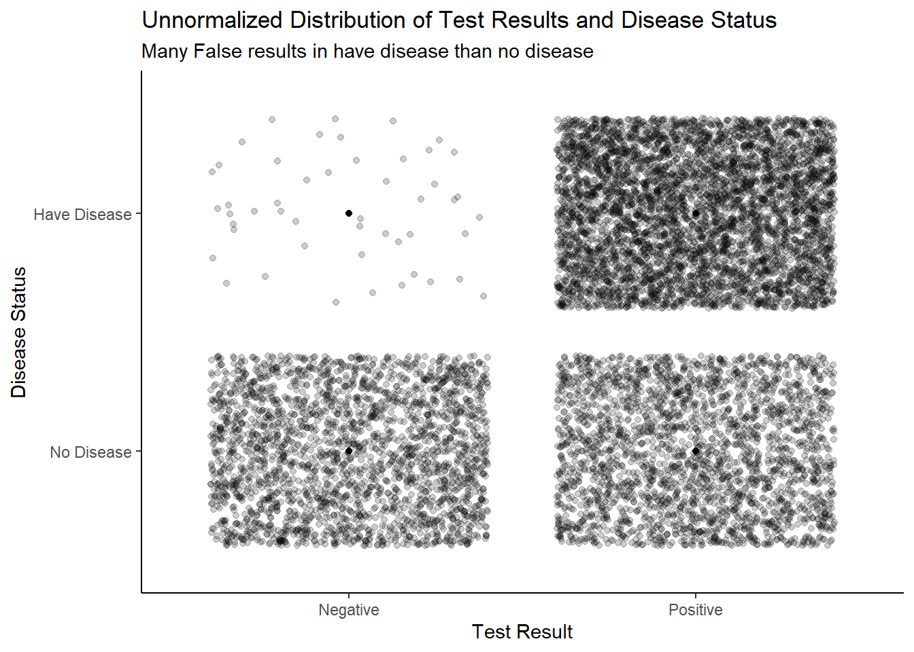
Below is a joint distribution displayed in 3D. Instead of using the “jitter” feature in R to unstack the dots, we are using a 3D plot to visualize the number of dots in each box. The number of people who correctly test negative is far greater than of the other categories. The 3D plot shows the total number of cases for each section (True positive, True negative, False positive, False negative),the 3D bar coming from those combinations. Now,pay attention to the two rows of the 3D graph, if you trying to add up the length of the 3D bar for the top two sections and the bottom two sections, they should be equal to each other, where each have 10,000 case. This is because we simulate the experience in two independent and separate world one in the have-disease world and one in the no-disease world.
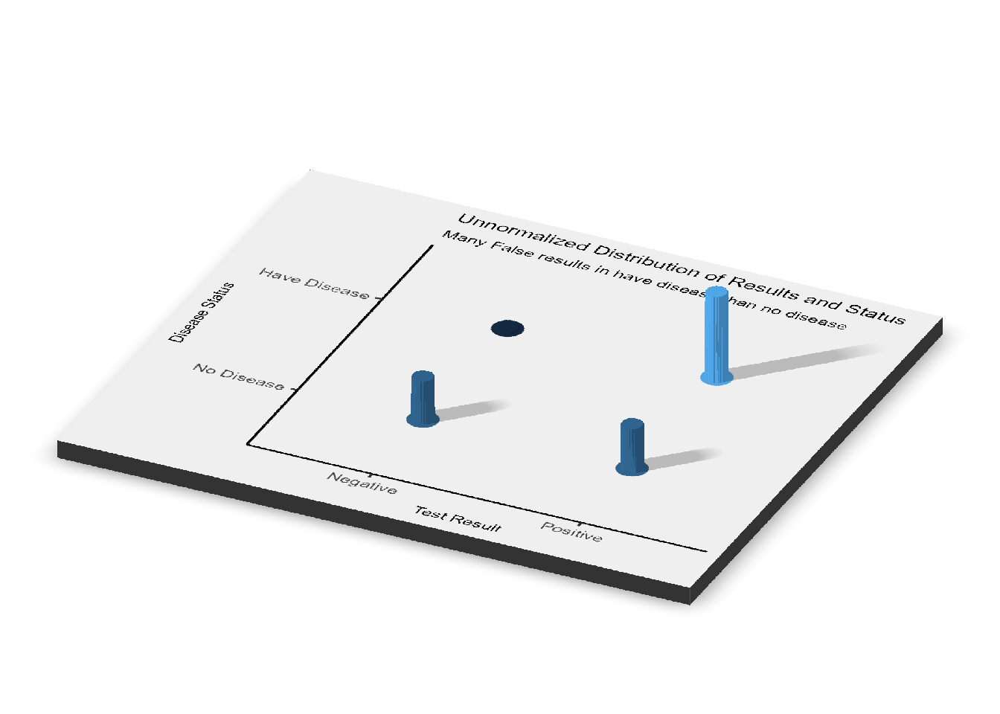
This Section is called “Two Models” because, for each person, there are two possible states of the world: have the disease or not have the disease. By assumption, there are no other outcomes. We call these two possible states of the world “models,” even though they are very simple models.
In addition to the two models, we have two possible results of our experiment on a given person: test positive or test negative. Again, this is an assumption. We do not allow for any other outcome. In coming sections, we will look at more complex situations where we consider more than two models and more than two possible results of the experiment. In the meantime, we have built the unnormalized joint distribution for models and results. This is a key point! Look back earlier in this Chapter for discussions about both unnormalized distributions and joint distributions.
We want to analyze these plots by looking at different slices. For instance, let’s say that you have tested positive for the disease. Since the test is not always accurate, you cannot be 100% certain that you have it. We isolate the slice where the test result equals 1 (meaning positive).
jd_disease |>
filter(positive_test == 1)# A tibble: 7,484 × 3
ID have_disease positive_test
<int> <lgl> <int>
1 1 TRUE 1
2 2 FALSE 1
3 3 TRUE 1
4 4 FALSE 1
5 5 TRUE 1
6 7 TRUE 1
7 8 FALSE 1
8 9 TRUE 1
9 11 TRUE 1
10 12 FALSE 1
# ℹ 7,474 more rowsMost people who test positive are infected This is a result for common diseases like cold. We can easily create an unnormalized conditional distribution with:
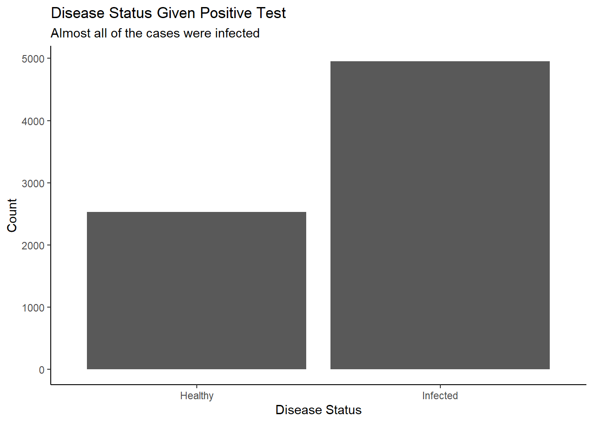
filter() transforms a joint distribution into a conditional distribution.
Turn this unnormalized distribution into a posterior probability distribution:
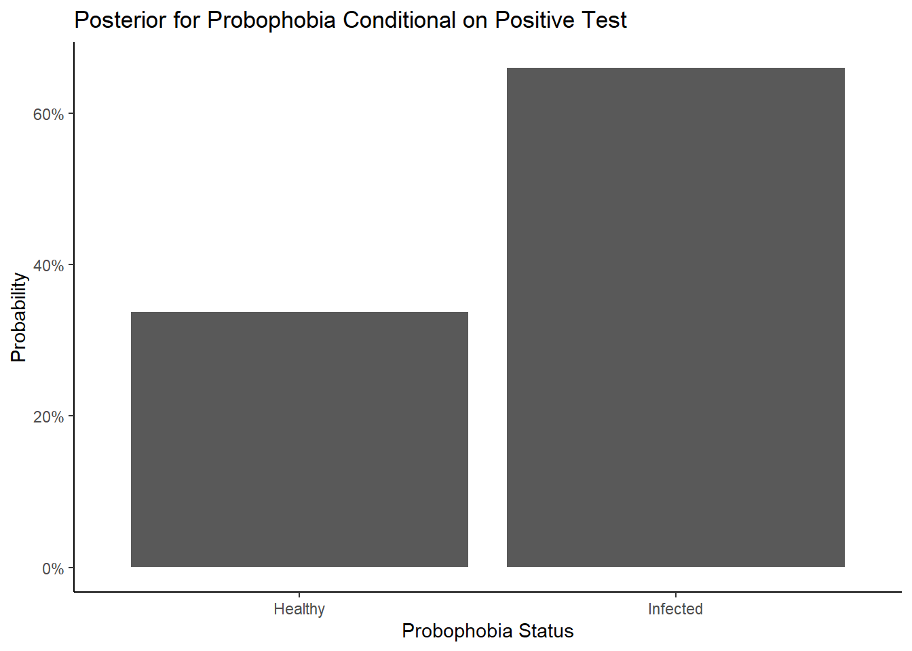
If we zoom in on the plot, about 70% of people who tested positive have the disease and 30% who tested positive do not have the disease. In this case, we are focusing on one slice of the probability distribution where the test result was positive. There are two disease outcomes: positive or negative. By isolating a section, we are looking at a conditional distribution. Conditional on a positive test, you can visualize the likelihood of actually having the disease versus not.
Now recalled the question we asked at the start of the session:
If you test positive, what is the probability that you have Probophobia?
By looking at the posterior graph we just create, we can answer this question easily:
With a positive test, you can be almost 70% sure that you have Probophobia, however there is a good chance about 30% that you receive a false positive, so don’t worry too much there is still about a third of hope that you get the wrong result
Now let’s consider the manipulation of this posterior, here is another question. Question : 10 people walks up to testing center, 5 of them tested negative, 5 of them tested positive, what is the probability of at least 6 people are actually healthy?
tibble(test = 1:100000) |>
mutate(person1 = map_int(test, ~ rbinom(n = 1, size = 1, p = 0.3))) |>
mutate(person2 = map_int(test, ~ rbinom(n = 1, size = 1, p = 0.3))) |>
mutate(person3 = map_int(test, ~ rbinom(n = 1, size = 1, p = 0.3))) |>
mutate(person4 = map_int(test, ~ rbinom(n = 1, size = 1, p = 0.3))) |>
mutate(person5 = map_int(test, ~ rbinom(n = 1, size = 1, p = 0.3))) |>
mutate(person6 = map_int(test, ~ rbinom(n = 1, size = 1, p = 0.7))) |>
mutate(person7 = map_int(test, ~ rbinom(n = 1, size = 1, p = 0.7))) |>
mutate(person8 = map_int(test, ~ rbinom(n = 1, size = 1, p = 0.7))) |>
mutate(person9 = map_int(test, ~ rbinom(n = 1, size = 1, p = 0.7))) |>
mutate(person10 = map_int(test, ~ rbinom(n = 1, size = 1, p = 0.7))) |>
select(!test) |>
# The tricky part of this code is that we want to sum the outcomes across the
# rows of the tibble. This is different from our usual approach of summing
# down the columns, as with summarize(). The way to do this is to, first, use
# rowwise() to tell R that we want to work with rows in the tibble and then,
# second, use c_across() to indicate which variables we want to work with.
rowwise() |>
mutate(total = sum(c_across(person1:person10))) |>
ggplot(aes(total)) +
geom_histogram(aes(y = after_stat(count/sum(count))),
binwidth = 1,
color = "white") +
scale_x_continuous(breaks = c(0:10)) +
scale_y_continuous(labels = scales::percent_format(accuracy = 1)) +
theme_classic() 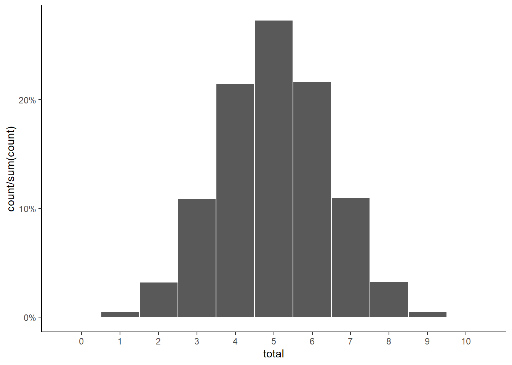
2.5 Three models

Imagine that your friend gives you a bag with two marbles. There could either be two white marbles, two black marbles, or one of each color. Thus, the bag could contain 0% white marbles, 50% white marbles, or 100% white marbles. The proportion, \(p\), of white marbles could be, respectively, 0, 0.5, or 1.
Question: What is the chance of the bag contains exactly two white marbles, given that when we selected the marbles three times, every time we select a white marble?
\[ P(\text{2 White Marbles in bag | White Marbles Sampled = 3} ) \] Just as during the Probophobia models, in order to answer this question, we need to start up with the simulated data and then graphing out the joint distribution of this scenerio because we need to considered all possible outcomes of this model, and then based on the joint distribution we can slice out the the part we want (the conditional distribution) in the end making a posterior graph as well as normalizing it to see the probability.
Step 1: Simulate the data into an tibble
Let’s say you take a marble out of the bag, record whether it’s black or white, then return it to the bag. You repeat this three times, observing the number of white marbles you see out of three trials. You could get three whites, two whites, one white, or zero whites as a result of this trial. We have three models (three different proportions of white marbles in the bag) and four possible experimental results. Let’s create 3,000 draws from this joint distribution:
# Create the joint distribution of the number of white marbles in the bag
# (in_bag) and the number of white marbles pulled out in the sample (in_sample),
# one-by-one. in_bag takes three possible values: 0, 1 and 2, corresponding to
# zero, one and two white marbles potentially in the bag.
set.seed(3)
sims <- 10000
# We also start off with a tibble. It just makes things easier
jd_marbles <- tibble(ID = 1:sims) |>
# For each row, we (randomly!) determine the number of white marbles in the
# bag. We do not know why the `as.integer()` hack is necessary. Shouldn't
# `map_int()` automatically coerce the result of `sample()` into an integer?
mutate(in_bag = map_int(ID, ~ as.integer(sample(c(0, 1, 2),
size = 1)))) |>
# Depending on the number of white marbles in the bag, we randomly draw out 0,
# 1, 2, or 3 white marbles in our experiment. We need `p = ./2` to transform
# the number of white marbles into the probability of drawing out a white
# marble in a single draw. That probability is either 0%, 50% or 100%.
mutate(in_sample = map_int(in_bag, ~ rbinom(n = 1,
size = 3,
p = ./2)))
jd_marbles# A tibble: 10,000 × 3
ID in_bag in_sample
<int> <int> <int>
1 1 0 0
2 2 1 3
3 3 2 3
4 4 1 1
5 5 2 3
6 6 2 3
7 7 1 0
8 8 2 3
9 9 0 0
10 10 1 2
# ℹ 9,990 more rowsStep 2: Plot the joint distribution:
# The distribution is unnormalized. All we see is the number of outcomes in each
# "bucket." Although it is never stated clearly, we are assuming that there is
# an equal likelihood of 0, 1 or 2 white marbles in the bag.
jd_marbles |>
ggplot(aes(x = in_sample, y = in_bag)) +
geom_jitter(alpha = 0.5) +
labs(title = "Black and White Marbles",
subtitle = "More white marbles in bag mean more white marbles selected",
x = "White Marbles Selected",
y = "White Marbles in the Bag") +
scale_y_continuous(breaks = c(0, 1, 2)) +
theme_classic()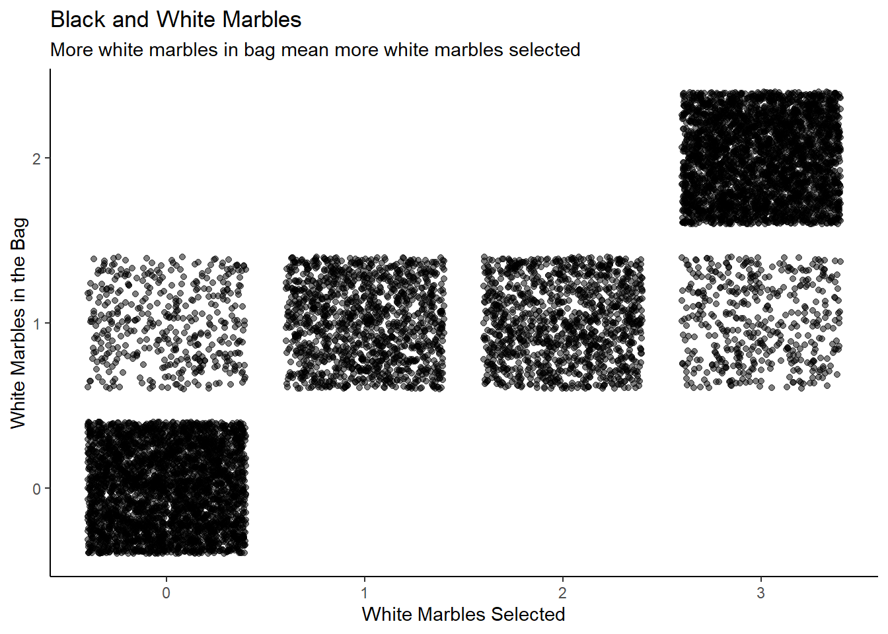
Here is the 3D visualization:
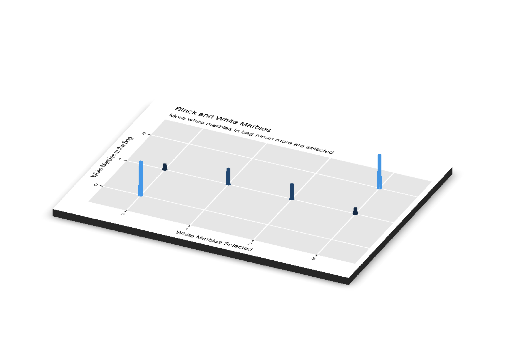
The y-axes of both the scatterplot and the 3D visualization are labeled “Number of White Marbles in the Bag.” Each value on the y-axis is a model, a belief about the world. For instance, when the model is 0, we have no white marbles in the bag, meaning that none of the marbles we pull out in the sample will be white.
Now recalls the question, we essentially only care about the fourth column in the joint distribution (x-axis=3) because the question is asking us to create a conditional distribution given that fact that 3 marbles were selected. Therefore, we could isolate the slice where the result of the simulation involves three white marbles and zero black ones. Here is the unnormalized probability distribution.
Step 3: Plot the unnormalized conditional distribution.
# The key step is the filter. Creating a conditional distribution from a joint
# distribution is the same thing as filtering that joint distribution for a
# specific value. A conditional distribution is a "slice" of the joint
# distribution, and we take that slice with filter().
jd_marbles |>
filter(in_sample == 3) |>
ggplot(aes(in_bag)) +
geom_histogram(binwidth = 0.5, color = "white") +
labs(title = "Unnormalized Conditional Distribution",
subtitle = "Number of white marbles in bag given that three were selected in the sample",
x = "Number of White Marbles in the Bag",
y = "Count") +
coord_cartesian(xlim = c(0, 2)) +
scale_x_continuous(breaks = c(0, 1, 2)) +
theme_classic()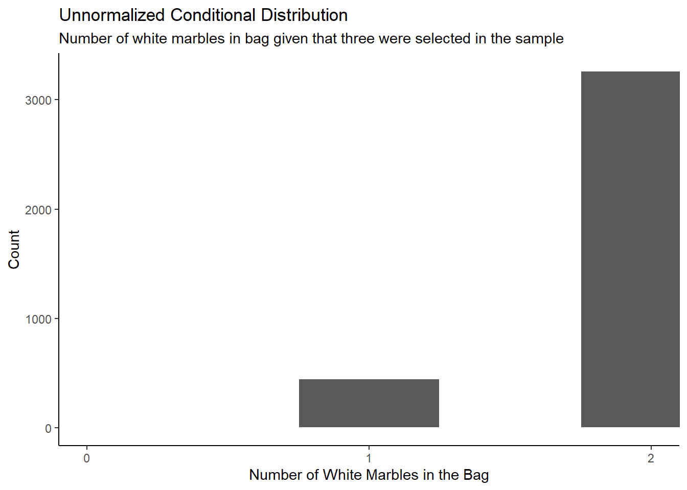
Step 4: Plot the normalize posterior distribution. Next, let’s normalize the distribution.
jd_marbles |>
filter(in_sample == 3) |>
ggplot(aes(in_bag)) +
geom_histogram(aes(y = after_stat(count/sum(count))),
binwidth = 0.5,
color = "white") +
labs(title = "Posterior Probability Distribution",
subtitle = "Number of white marbles in bag given that three were selected in the sample",
x = "Number of White Marbles in the Bag",
y = "Probability") +
coord_cartesian(xlim = c(0, 2)) +
scale_x_continuous(breaks = c(0, 1, 2)) +
scale_y_continuous(labels =
scales::percent_format(accuracy = 1)) +
theme_classic()This plot makes sense because when all three marbles you draw out of the bag are white, there is a pretty good chance that there are no black marbles in the bag. But you can’t be certain! It is possible to draw three white even if the bag contains one white and one black. However, it is impossible that there are zero white marbles in the bag.
Lastly let’s answer the question: What is the chance of the bag contains exactly two white marbles, given that when we selected the white marbles three times, everytime we select a white marble?
Answer: As the Posterior Probability Distribution shows (x-axis=2), the chance of the bag contains exactly two white marbles given that we select 3 white marbles out of three tries is about 85%.
2.6 N models

Assume that there is a coin with \(\rho_h\). We guarantee that there are only 11 possible values of \(\rho_h\): \(0, 0.1, 0.2, ..., 0.9, 1\). In other words, there are 11 possible models, 11 things which might be true about the world. This is just like situations we have previously discussed, except that there are more models to consider.
We are going to run an experiment in which you flip the coin 20 times and record the number of heads. What does this result tell you about the value of \(\rho_h\)? Ultimately, we will want to calculate a posterior distribution of \(\rho_h\), which is written as p(\(\rho_h\)).
Question: What is the probability of getting exactly 8 heads out of 20 tosses?
To start, it is useful to consider all the things which might happen if, for example, \(\rho_h = 0.4\). Fortunately, the R functions for simulating random variables makes this easy.

First, notice that many different things can happen! Even if we know, for certain, that \(\rho_h = 0.4\), many outcomes are possible. Life is remarkably random. Second, the most likely result of the experiment is 8 heads, as we would expect. Third, we have transformed the raw counts of how many times each total appeared into a probability distribution. Sometimes, however, it is convenient to just keep track of the raw counts. The shape of the figure is the same in both cases.
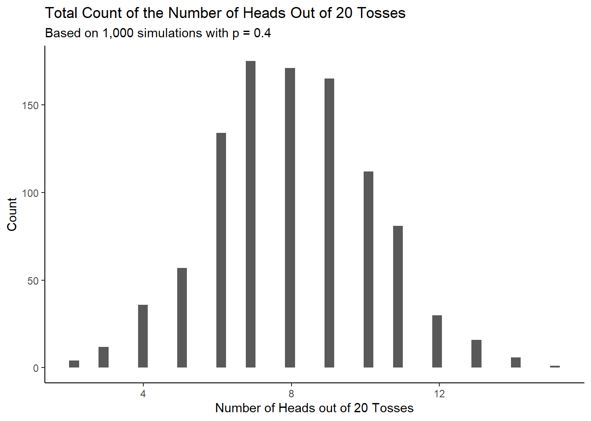
Either way, the figures show what would have happened if that model — that \(\rho_h = 0.4\) — were true.
We can do the same thing for all 11 possible models, calculating what would happen if each of them were true. This is somewhat counterfactual since only one of them can be true. Yet this assumption does allow us to create the joint distribution of models which might be true and of data which our experiment might generate. Let’s simplify this is p(models, data), although you should keep the precise meaning in mind.
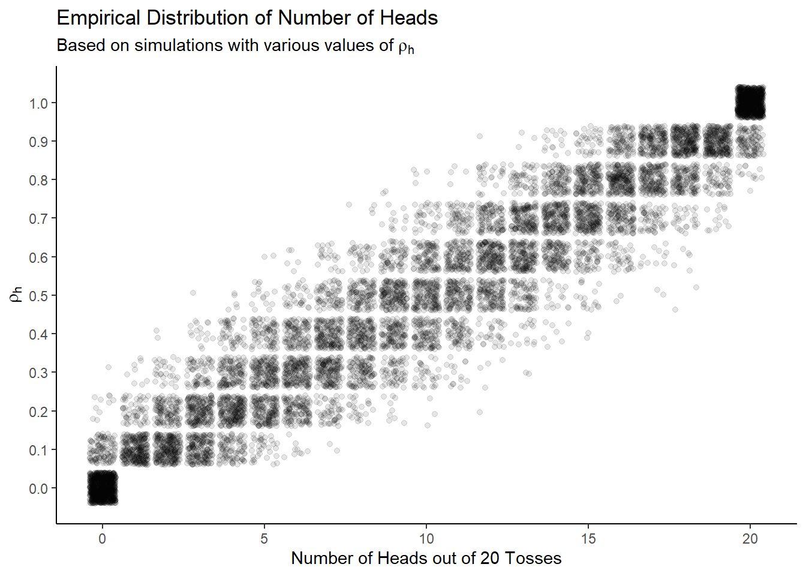
Here is the 3D version of the same plot.
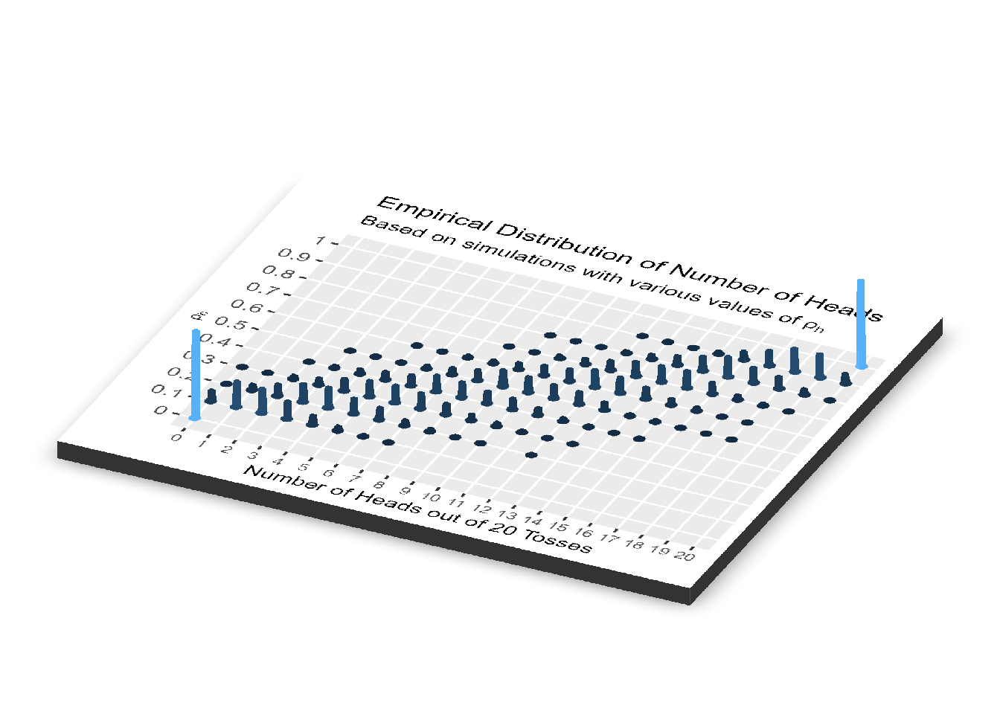
In both of these diagrams, we see 11 models and 21 outcomes. We don’t really care about the p(\(models\), \(data\)), the joint distribution of the models-which-might-be-true and the data-which-our-experiment-might-generate. Instead, we want to estimate \(p\), the unknown parameter which determines the probability that this coin will come up heads when tossed. The joint distribution alone can’t tell us that. We created the joint distribution before we had even conducted the experiment. It is our creation, a tool which we use to make inferences. Instead, we want the conditional distribution, p(\(models\) | \(data = 8\)). We have the results of the experiment. What do those results tell us about the probability distribution of \(p\)?
To answer this question, we simply take a vertical slice from the joint distribution at the point of the x-axis corresponding to the results of the experiment.
This animation shows what we want to do with joint distributions. We take a slice (the red one), isolate it, rotate it to look at the conditional distribution, normalize it (change the values along the current z-axis from counts to probabilities), then observe the resulting posterior.

This is the only part of the joint distribution that we care about. We aren’t interested in what the object looks like where, for example, the number of heads is 11. That portion is irrelevant because we observed 8 heads, not 11. By using the filter function on the simulation tibble we created, we can conclude that there are a total of 465 times in our simulation in which 8 heads were observed.
As we would expect, most of the time when 8 coin tosses came up heads, the value of \(p\) was 0.4. But, on numerous occasions, it was not. It is quite common for a value of \(p\) like 0.3 or 0.5 to generate 8 heads. Consider:
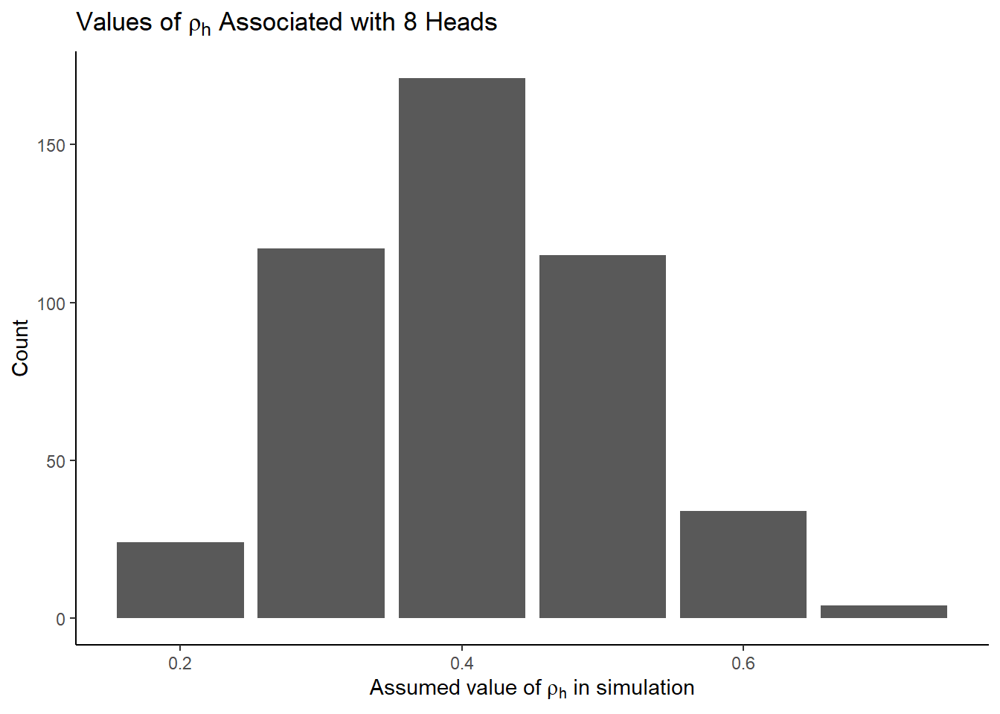
Yet this is a distribution of raw counts. It is an unnormalized density. To turn it into a proper probability density (i.e., one in which the sum of the probabilities across possible outcomes sums to one) we just divide everything by the total number of observations.
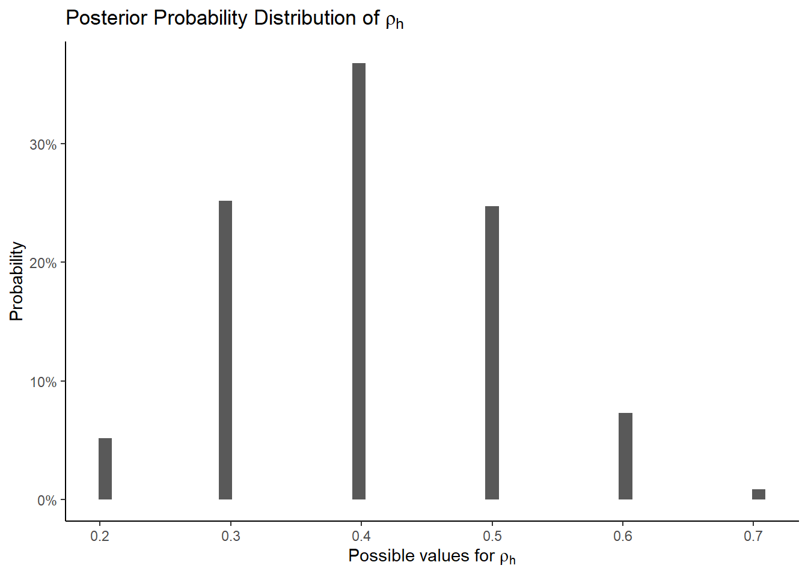
Solution:
The most likely value of \(\rho_h\) is 0.4, as before. But, it is much more likely that \(p\) is either 0.3 or 0.5. And there is about an 8% chance that \(\rho_h \ge 0.6\).
You might be wondering: what is the use of a model? Well, let’s say we toss the coin 20 times and get 8 heads again. Given this result, we can ask: What is the probability that future samples of 20 flips will result in 10 or more heads?
There are three main ways you could go about solving this problem with simulations.
The first wrong way to do this is assuming that \(\rho_h\) is certain because we observed 8 heads after 20 tosses. We would conclude that 8/20 gives us 0.4. The big problem with this is that you are ignoring your uncertainty when estimating \(\rho_h\). This would lead us to the following code.
sims <- 10000000
odds <- tibble(sim_ID = 1:sims) |>
mutate(heads = map_int(sim_ID, ~ rbinom(n = 1, size = 20, p = .4))) |>
mutate(above_ten = if_else(heads >= 10, TRUE, FALSE))
odds# A tibble: 10,000,000 × 3
sim_ID heads above_ten
<int> <int> <lgl>
1 1 10 TRUE
2 2 5 FALSE
3 3 2 FALSE
4 4 10 TRUE
5 5 5 FALSE
6 6 10 TRUE
7 7 7 FALSE
8 8 11 TRUE
9 9 9 FALSE
10 10 9 FALSE
# ℹ 9,999,990 more rowsodds |>
ggplot(aes(x=heads,fill=above_ten))+
geom_histogram(aes(y = after_stat(count/sum(count))),bins = 50)+
scale_fill_manual(values = c('grey50', 'red'))+
labs(title = "Posterior Probability Distribution (Wrong Way)",
subtitle = "Number of heads in 20 tosses",
x = "Number of heads",
y = "Probability",
fill = "Above ten heads") +
scale_x_continuous(labels = scales::number_format(accuracy = 1)) +
scale_y_continuous(labels = scales::percent_format(accuracy = 1)) +
theme_classic()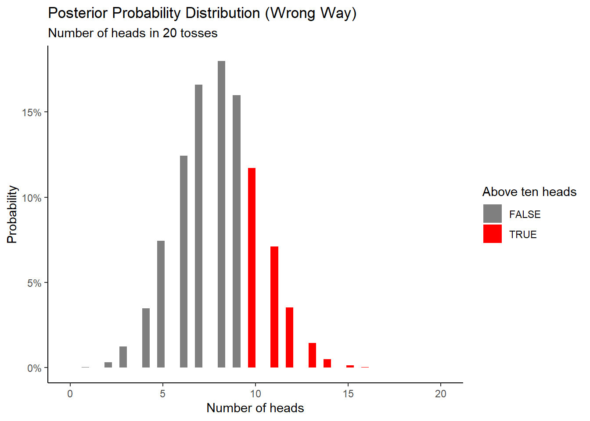
Using this Posterior distribution derived from the (wrong way) simulated data, the probability results in 10 or more head is
odds |>
summarize(success = sum(above_ten)/sims)# A tibble: 1 × 1
success
<dbl>
1 0.245about 24.5%.
The second method involves sampling the whole posterior distribution vector we previously created. This would lead to the following correct code.
p_draws <- tibble(p = rep(seq(0, 1, 0.1), 1000)) |>
mutate(heads = map_int(p, ~ rbinom(n = 1, size = 20, p = .))) |>
filter(heads == 8)
odds_2nd <- tibble(p = sample(p_draws$p, size = sims, replace = TRUE)) |>
mutate(heads = map_int(p, ~ rbinom(n = 1, size = 20, p = .))) |>
mutate(above_ten = if_else(heads >= 10, TRUE, FALSE))
odds_2nd# A tibble: 10,000,000 × 3
p heads above_ten
<dbl> <int> <lgl>
1 0.4 7 FALSE
2 0.3 8 FALSE
3 0.5 13 TRUE
4 0.4 10 TRUE
5 0.4 6 FALSE
6 0.5 8 FALSE
7 0.5 9 FALSE
8 0.5 12 TRUE
9 0.5 10 TRUE
10 0.4 8 FALSE
# ℹ 9,999,990 more rowsodds_2nd |>
ggplot(aes(x = heads,fill = above_ten))+
geom_histogram(aes(y = after_stat(count/sum(count))),bins = 50)+
scale_fill_manual(values = c('grey50', 'red'))+
labs(title = "Posterior Probability Distribution (Right Way)",
subtitle = "Number of heads in 20 tosses",
x = "Number of heads",
y = "Probability",
fill = "Above ten heads") +
scale_x_continuous(labels = scales::number_format(accuracy = 1)) +
scale_y_continuous(labels = scales::percent_format(accuracy = 1)) +
theme_classic()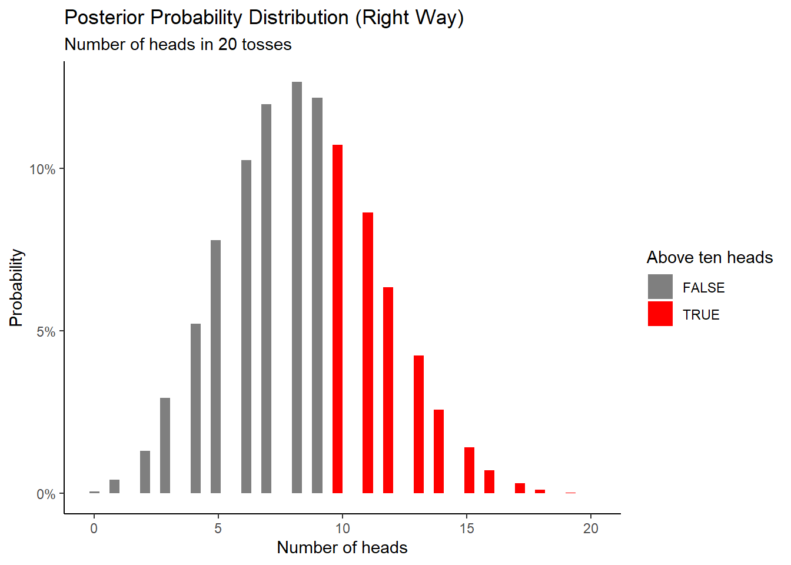
Using this Posterior distribution derived from the (right way 1st) simulated data, the probability results in 10 or more head is
odds_2nd |>
summarize(success = sum(above_ten)/sims)# A tibble: 1 × 1
success
<dbl>
1 0.351about 32.8%
As you may have noticed, if you calculated the value using the first method, you would believe that getting 10 or more heads is less likely than it really is. If you were to run a casino based on these assumptions, you will lose all your money. It is very important to be careful about the assumptions you are making. We tossed a coin 20 times and got 8 heads. However, you would be wrong to assume that \(\rho_h\) = 0.4 just based on this result.
2.7 Working with probability distributions
2.7.1 Random variables
2.7.1.1 sample()
The most common distributions you will work with are empirical or frequency distributions, the values of age in the trains tibble, the values of poverty in the kenya tibble, and so on. But we can also create our own data by making “draws” from a distribution which we have concocted.
Consider the distribution of the possible values from rolling a fair die. We can use the sample() function to create draws from this distribution, meaning it will change (or sometimes stay the same) for every subsequent draw.
die <- c(1, 2, 3, 4, 5, 6)
sample(x = die, size = 1)[1] 3This produces one “draw” from the distribution of the possible values of one roll of fair six-sided die.
Now, suppose we wanted to roll this die 10 times. One of the arguments of the sample() function is replace. We must specify it as TRUE if values can appear more than once. Since, when rolling a die 10 times, we expect that a value like 3 can appear more than once, we need to set replace = TRUE.
sample(x = die, size = 10, replace = TRUE) [1] 5 6 3 3 3 4 3 6 4 5In other words, rolling a 1 on the first roll should not preclude you from rolling a 1 on a later roll.
What if the die is not “fair,” meaning that some sides are more likely to appear than others? The final argument of the sample() function is the prob argument. It takes a vector (of the same length as the initial vector x) that contains all of the probabilities of selecting each one of the elements of x. Suppose that the probability of rolling a 1 was 0.5, and the probability of rolling any other value is 0.1. (These probabilities should sum to 1. If they don’t sample() will automatically re-scale them.)
sample(x = die,
size = 10,
replace = TRUE,
prob = c(0.5, 0.1, 0.1, 0.1, 0.1, 0.1)) [1] 1 1 3 1 2 1 1 6 1 1Remember: There is no real data here. We have not actually rolled a die. We have just made some assumptions about what would happen if we were to roll a die. With those assumptions we have built an urn — a data generating mechanism — from which we can draw as many values as we like. Let’s roll the unfair die 10,000 times.
tibble(result = sample(x = die,
size = 10000,
replace = TRUE,
prob = c(0.5, rep(0.1, 5)))) |>
ggplot(aes(x = result)) +
geom_bar() +
labs(title = "Distribution of Results of an Unfair Die",
x = "Result of One Roll",
y = "Count") +
scale_x_continuous(breaks = 1:6,
labels = as.character(1:6)) +
scale_y_continuous(labels = scales::comma_format())
sample() is just one of many functions for creating draws — or, more colloquially, “drawing” — from a distribution. Three of the most important functions are: runif(), rbinom(), and rnorm().
2.7.1.2 runif()
Consider a “uniform” distribution. This is the case in which every outcome in the range of possible outcomes has the same chance of occurring. The function runif() (spoken as “r-unif”) enables us to draw from a uniform contribution. runif() has three arguments: n, min, and max. runif() will produce n draws from between min and max, with each value having an equal chance of occurring.
runif(n = 10, min = 4, max = 6) [1] 5.594800 4.981960 4.601993 5.738417 4.879622 5.155263 4.319479 5.627666
[9] 4.800110 5.634794Mathematically, we would notate:
\[y_i \sim U(4, 6)\]
This means that the each value for \(y\) is drawn from a uniform distribution between four and six.
2.7.2 rbinom()
Consider binomial distribution, the case in which the probability of some Boolean variable (for instance success or failure) is calculated for repeated, independent trials. One common example would be the probability of flipping a coin and landing on heads. The function rbinom() allows us to draw from a binomial distribution. This function takes three arguments, n, size, and prob.
n is the number of values we seek to draw. size is the number of trials for each n. *prob is the probability of success on each trial.
Suppose we wanted to flip a fair coin one time, and let landing on heads represent success.
rbinom(n = 1 , size = 1, prob = 0.5)[1] 0Do the same thing 100 times:
tibble(heads = rbinom(n = 100, size = 1, prob = 0.5)) |>
ggplot(aes(x = heads)) +
geom_bar() +
labs(title = "Flipping a Fair Coin 100 Times",
x = "Result",
y = "Count") +
scale_x_continuous(breaks = c(0, 1),
labels = c("Tails", "Heads"))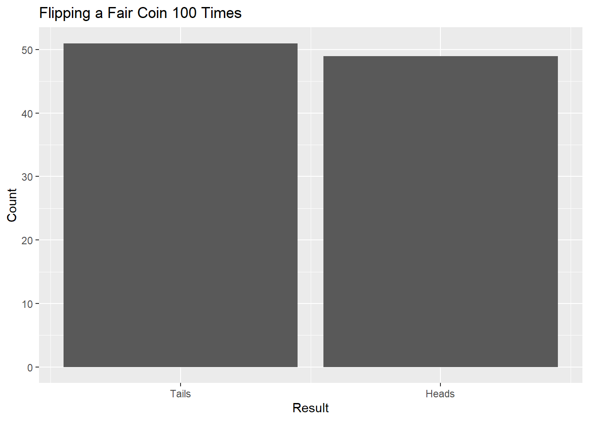
In our graph above, we use the function scale_x_continuous() because our x-axis variable is continuous, meaning it can take on any real values. The breaks argument to scale_x_continuous() converts our x-axis to having two different “tick marks”. There is a fairly even distribution of Tails and Heads. More draws would typically result in an even more equal split.
Randomness creates (inevitable) tension between distribution as a “thing” and distribution as a vector of draws from that thing. In this case, the vector of draws is not balanced between Tails and Heads. Yet, we “know” that it should be since the coin is, by definition, fair. In a sense, the mathematics require an even split. Yet, randomness means that the vector of draws will rarely match the mathematically “true” result. And that is OK! First, randomness is an intrinsic property of the real world. Second, we can make the effect of randomness be as small as we want by increasing the number of draws.
Suppose instead we wanted to simulate an unfair coin, where the probability of landing on Heads was 0.75 instead of 0.25.
tibble(heads = rbinom(n = 100, size = 1, prob = 0.75)) |>
ggplot(aes(x = heads)) +
geom_bar() +
labs(title = "Flipping a Fair Coin 100 Times",
x = "Result",
y = "Count") +
scale_x_continuous(breaks = c(0, 1),
labels = c("Tails", "Heads"))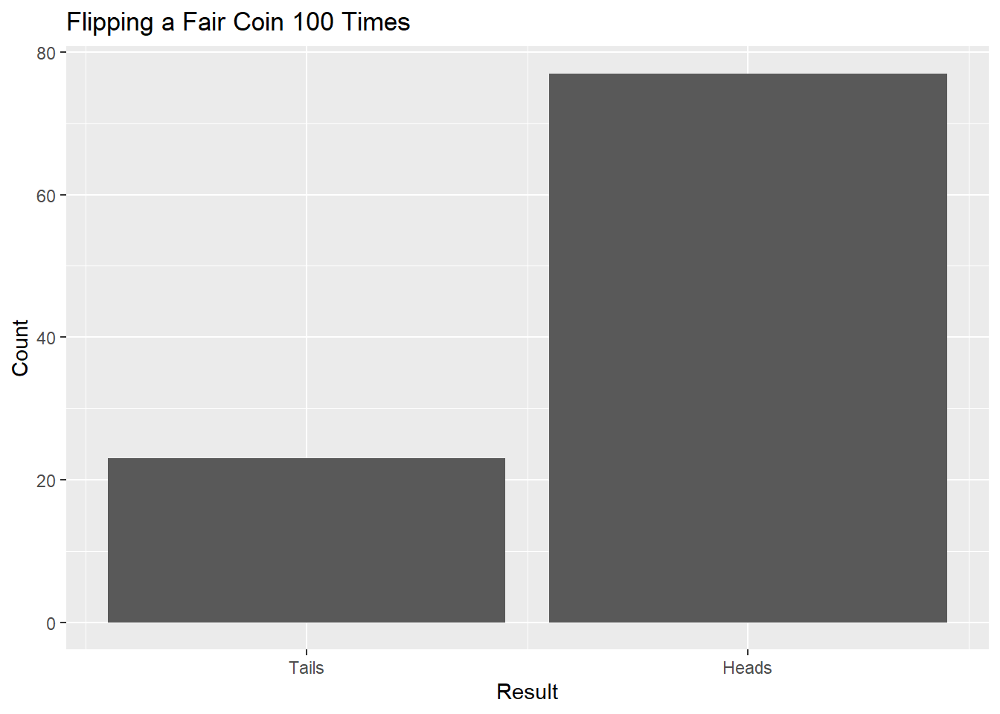
The distribution — the imaginary urn — from which we draw the results of a coin flip for a fair coin is a different distribution — a different imaginary urn — from the distribution for a biased coin. In fact, there are an infinite number of distributions. Yet as long as we can draw values from a distribution, we can work with it. Mathematics:
\[y_i \sim B(n, p)\]
Each value for \(y\) is drawn from a binomial distribution with parameters \(n\) for the number of trials and \(p\) for the probability of success.
Instead of each n consisting of a single trial, we could have situation in which we are, 10,000 times, flipping a coin 10 times and summing up, for each experiment, the number of heads. In that case:
set.seed(9)
tibble(heads = rbinom(n = 10000, size = 10, prob = 0.5)) |>
ggplot(aes(x = heads)) +
geom_bar() +
labs(title = "Flipping a Fair Coin 10 Times",
subtitle = "Extreme results are possible with enough experiments",
x = "Total Number of Heads in Ten Flips",
y = "Count") +
scale_x_continuous(breaks = 0:10)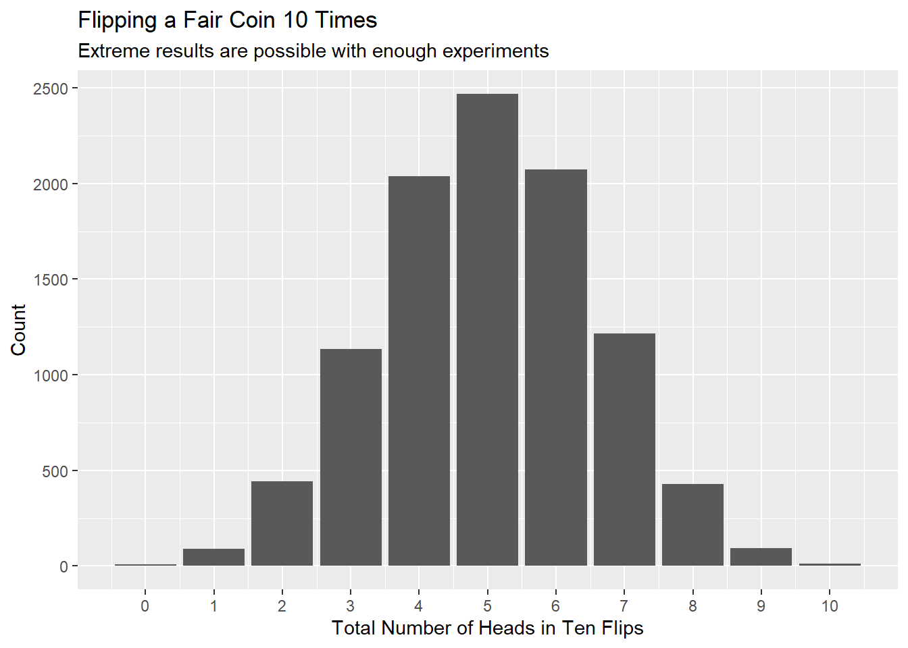
2.7.2.1 rnorm()
The most important distribution is the normal distribution. Mathematics:
\[y_i \sim N(\mu, \sigma^2)\]
Each value \(y_i\) is drawn from a normal distribution with parameters \(\mu\) for the mean and \(\sigma\) for the standard deviation.
This bell-shaped distribution is defined by two parameters: (1) the mean \(\mu\) (spoken as “mu”) which locates the center of the distribution and (2) the standard deviation \(\sigma\) (spoken as “sigma”) which determines the variation of values around that center. In the figure below, we plot three normal distributions where:
- The solid normal curve has mean \(\mu = 5\) & standard deviation \(\sigma = 2\).
- The dotted normal curve has mean \(\mu = 5\) & standard deviation \(\sigma = 5\).
- The dashed normal curve has mean \(\mu = 15\) & standard deviation \(\sigma = 2\).
Warning: package 'ggrepel' was built under R version 4.3.1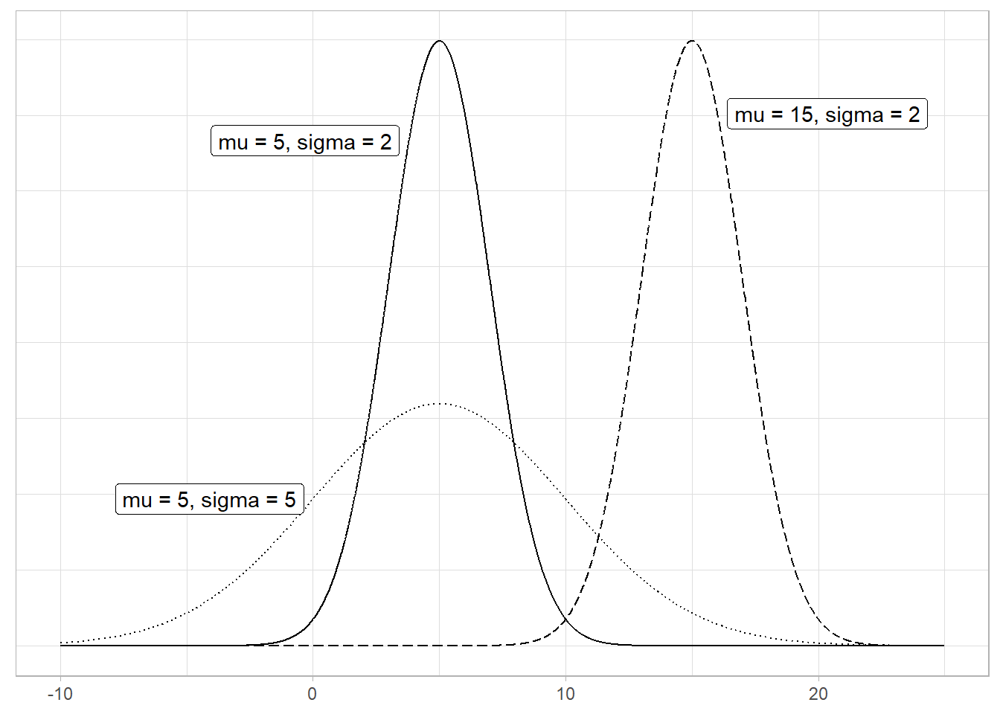
Notice how the solid and dotted line normal curves have the same center due to their common mean \(\mu\) = 5. However, the dotted line normal curve is wider due to its larger standard deviation of \(\sigma = 5\). On the other hand, the solid and dashed line normal curves have the same variation due to their common standard deviation \(\sigma = 2\). However, they are centered at different locations.
When the mean \(\mu = 0\) and the standard deviation \(\sigma = 1\), the normal distribution has a special name. It’s called the standard normal distribution or the \(z\)-curve.
Furthermore, if a variable follows a normal curve, there are three rules of thumb we can use:
- 68% of values will lie within \(\pm\) 1 standard deviation of the mean.
- 95% of values will lie within \(\pm\) 1.96 \(\approx\) 2 standard deviations of the mean.
- 99.7% of values will lie within \(\pm\) 3 standard deviations of the mean.
Let’s illustrate this on a standard normal curve. The dashed lines are at -3, -1.96, -1, 0, 1, 1.96, and 3. These 7 lines cut up the x-axis into 8 segments. The areas under the normal curve for each of the 8 segments are marked and add up to 100%. For example:
- The middle two segments represent the interval -1 to 1. The shaded area above this interval represents 34% + 34% = 68% of the area under the curve. In other words, 68% of values.
- The middle four segments represent the interval -1.96 to 1.96. The shaded area above this interval represents 13.5% + 34% + 34% + 13.5% = 95% of the area under the curve. In other words, 95% of values.
- The middle six segments represent the interval -3 to 3. The shaded area above this interval represents 2.35% + 13.5% + 34% + 34% + 13.5% + 2.35% = 99.7% of the area under the curve. In other words, 99.7% of values.
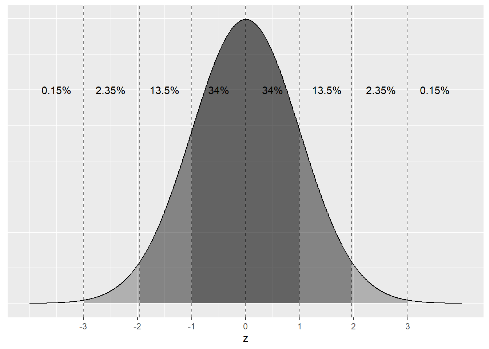
2.7.3 Summary statistics
A probability distribution is not always easy to work with. It is a complex object. And, in many contexts, we don’t really care about all that complexity. So, instead of providing the full probability distribution, we often just use a summary measure, a number or two or three which captures those aspects of the entire distribution which are relevant to the matter at hand. Let’s explore these issues using the 538 posterior probability distribution, as of August 13, 2020, for the number of electoral votes which will be won by Joe Biden. Here is a tibble with 1,000,000 draws from that distribution:
draws# A tibble: 1,000,000 × 2
ID electoral_votes
<int> <int>
1 1 388
2 2 474
3 3 279
4 4 400
5 5 239
6 6 364
7 7 198
8 8 319
9 9 336
10 10 294
# ℹ 999,990 more rowsA distribution and a sample of draws from that distribution are different things. But, if you squint, they are sort of the same thing, at least for our purposes. For example, if you want to know the mean of the distribution, then the mean of the draws will be a fairly good estimate, especially if the number of draws is large enough.
Recall how we can draw randomly from specified probability distributions:
rnorm(10) [1] 0.95693552 0.18860245 -2.04561627 0.41344817 0.26100764 1.18315071
[7] 0.07832782 -1.14338230 -0.98240598 1.88883159runif(10) [1] 0.30482858 0.08068409 0.65942947 0.86727544 0.54974073 0.20976843
[7] 0.77876867 0.09990737 0.74968824 0.19082733The elements of these vectors are all “draws” from the specified probability distributions. In most applied situations, our tools will produce draws rather than summary objects. Fortunately, a vector of draws is very easy to work with. Start with summary statistics:
# recall mean, media, standard deviation and mad functions.
key_stats <- draws |>
summarize(mn = mean(electoral_votes),
md = median(electoral_votes),
sd = sd(electoral_votes),
mad = mad(electoral_votes))
key_stats# A tibble: 1 × 4
mn md sd mad
<dbl> <dbl> <dbl> <dbl>
1 325. 326 86.9 101.Calculate a 95% interval directly:
quantile(draws$electoral_votes, probs = c(0.025, 0.975)) 2.5% 97.5%
172 483 Approximate the 95% interval in two ways:
c(key_stats$mn - 2 * key_stats$sd,
key_stats$mn + 2 * key_stats$sd)[1] 151.5461 499.0198c(key_stats$md - 2 * key_stats$mad,
key_stats$md + 2 * key_stats$mad)[1] 124.3664 527.6336In this case, using the mean and standard deviation produces a 95% interval which is closer to the true interval. In other cases, the median and scaled median absolute deviation will do better. Either approximation is generally “good enough” for most work. But, if you need to know the exact 95% interval, you must use quantile().
2.8 Cardinal Virtues
The four Cardinal Virtues are Wisdom, Justice, Courage, and Temperance. Because data science is, ultimately, a moral act, we use these virtues to guide our work. Every data science project begins with a question.
Wisdom starts by creating the Preceptor Table. What data, if we had it, would allow us to answer our question easily? If the Preceptor Table has one outcome, then the model is predictive. If it has more than one (potential) outcome, then the model is causal. We then explore the data we have. You can never look too closely at your data. Key question: Are the data we have close enough to the data we want (i.e., the Preceptor Table) that we can consider both as coming from the same population? If not, we can’t proceed further. Key in making that decision is the assumption of validity. Do the columns in the Preceptor Table match the columns in the data?
Justice starts with the Population Table – the data we want to have, the data which we actually have, and all the other data from that same population. Each row of the Population Table is defined by a unique Unit/Time combination. We explore three key issues about the Population Table. First, does the relationship among the variables demonstrate stability, meaning is the model stable across different time periods? Second, are the rows associated with the data representative of all the units which we might have had data for from that time period? Third, for causal models only, we consider unconfoundedness. Justice concludes by making an assumption about the data generating mechanism. Which general mathematical formula connects the outcome variable we are interested in with the other data that we have?
Courage allows us to explore different models. Even though Justice has provided the basic mathematical structure of the model, we still need to decide which variables to include and to estimate the values of unknown parameters. We avoid hypothesis tests. We check our models for consistency with the data we have. We select one model.
Temperance guides us in the use of the model we have created to answer the questions we began with. We create posteriors of quantities of interest. We should be modest in the claims we make. The posteriors we create are never the “truth.” The assumptions we made to create the model are never perfect. Yet decisions made with flawed posteriors are almost always better than decisions made without them.
2.8.1 Wisdom

Wisdom helps us decide if we can even hope to answer our question with the data we have.
Begin with the Preceptor Table. What rows and columns of data do you need such that, if you had them all, the calculation of the quantity of interest would be trivial? If you want to know the average height of an adult in India, then the Preceptor Table would include a row for each adult and a column for their height. With no missing data, the average is easy to determine, as are a wide variety of other estimands, other unknown values.
One key aspect of this Preceptor Table is whether or not we need more than one potential outcome in order to calculate our estimand. For example, if we want to know the causal effect of exposure to Spanish-speakers on attitude toward immigration then we need a causal model, one which estimates that attitude for each person under both treatment and control. The Preceptor Table would require two columns for the outcome. If, on the other hand, we only want to predict someone’s attitude, or compare one person’s attitude to another’s, then we would only need a Preceptor Table with one column for the outcome.
Are we are modeling (just) for prediction or are we (also) modeling for causation? Predictive models care nothing about causation. Causal models are often also concerned with prediction, if only as a means of measuring the quality of the model.
Every model is predictive, in the sense that, if we give you new data — and it is drawn from the same population — then you can create a predictive forecast. But only a subset of those models are causal, meaning that, for a given individual, you can change the value of one input and figure out what the new output would be and then, from that, calculate the causal effect by looking at the difference between two potential outcomes.
With prediction, all we care about is forecasting \(Y\) given \(X\) on some as-yet-unseen data. But there is no notion of “manipulation” in such models. We don’t pretend that, for Joe, we could turn variable \(X\) from a value of \(5\) to a value of \(6\) by just turning some knob and, by doing so, cause Joe’s value of \(Y\) to change from \(17\) to \(23\). We can compare two people (or two groups of people), one with \(X\) equal to \(5\) and one with \(X\) equal to \(6\), and see how they differ in \(Y\). The basic assumption of predictive models is that there is only one possible \(Y\) for Joe. There are not, by assumption, two possible values for \(Y\), one if \(X\) equals \(5\) and another if \(X\) equals \(6\). The Preceptor Table has a single column under \(Y\).
With causal inference, however, we can consider the case of Joe with \(X = 5\) and Joe with \(X = 6\). The same mathematical model can be used. And both models can be used for prediction, for estimating what the value of \(Y\) will be for a yet-unseen observation with a specified value for \(X\). But, in this case, instead of only a single column in the Preceptor Table for \(Y\), we have at least two (and possibly many) such columns, one for each of the potential outcomes under consideration.
The difference between prediction models and causal models is that the former have one column for the outcome variable and the latter have more than one column.
Second, we look at the data we have and perform an exploratory data analysis, an EDA. You can never look at your data too much. The most important variable is the one we most want to understand/explain/predict. In the models we create in later chapters, this variable will go on the left-hand side of our mathematical equations. Some academic fields refer to this as the “dependent variable.” Others use terms like “response” or “outcome.” Whatever the terminology, we need to explore the distribution of this variable, its min/max/range, its mean and median, its standard deviation, and so on.
Gelman, Hill, and Vehtari (2020) write:
Most important is that the data you are analyzing should map to the research question you are trying to answer. This sounds obvious but is often overlooked or ignored because it can be inconvenient. Optimally, this means that the outcome measure should accurately reflect the phenomenon of interest, the model should include all relevant predictors, and the model should generalize to the cases to which it will be applied.
For example, with regard to the outcome variable, a model of incomes will not necessarily tell you about patterns of total assets. A model of test scores will not necessarily tell you about child intelligence or cognitive development. …
We care about other variables as well, especially those that are most correlated/connected with the outcome variable. The more time that we spend looking at these variables, the more likely we are to create a useful model.
Third, the (almost always imaginary) population is key. We need the data we want — the Preceptor Table — and the data we have to be similar enough that we can consider them as all having come from the same statistical population. From Wikipedia:
In statistics, a population is a set of similar items or events which is of interest for some question or experiment. A statistical population can be a group of existing objects (e.g. the set of all stars within the Milky Way galaxy) or a hypothetical and potentially infinite group of objects conceived as a generalization from experience (e.g. the set of all opening hands in all the poker games in Las Vegas tomorrow).
Mechanically, assuming that the Precetor Table and the data are drawn from the same population is the same thing as “stacking” the two on top of each other. For that to make sense, the variables must mean the same thing — at least mostly — in both sources. This is the assumption of validity. For example, if the Preceptor Table concerns who people will vote for in the election next week and the data is from a survey taken last week, it is not obvious that we can consider the data as coming from the same population. After all, voting and survey responses are not exactly the same thing. We can only assume that they are — which is precisely what everyone who forecasts elections does — if we assume that both are “valid” measures of the same underlying construct.
If we assume that the data we have is drawn from the same population as the data in the Preceptor Table, then we can use information about the former to make inferences about the latter. We can combine the Preceptor Table and the data into a single Population Table. If we can’t do that, if we can’t assume that the two sources come from the same population, then we can’t use our data to answer our questions. We have no choice but to walk away. The heart of Wisdom is knowing when to walk away. As John Tukey noted:
The combination of some data and an aching desire for an answer does not ensure that a reasonable answer can be extracted from a given body of data.
2.8.2 Justice

After Wisdom, we have an Population Table. It includes rows for the data we have and the data we want to have. It will almost always have many more rows, rows from the larger population of which the Preceptor Table and our data form a portion. It has missing values, most importantly for potential outcomes which were not observed. The central problem in inference is to fill in the question marks in the Population Table.
There are three key issues to explore in any Population Table: stability, representativeness and unconfoundedness.
Stability assumes that the relationship between the outcome variable and the covariates is consistent over time. Never forget that temporal nature of almost all real data science problems. Our Preceptor Table will focus on rows for today or for the near future. The data we have will always be from before now. We must almost always assume that the future will be like the past in order to use data from the past to make predictions about the future.
Representativeness is a two-sided concern. We want the data we have to be representative of the population for which we need to calculate parameters. Ideally, we would love for our data to be randomly sampled from the population, but this is almost never the case. But this is a concern, not just with our data, but also for our Preceptor Table. If the data we want is not representative of the entire population then we will need to be careful in the inferences which we draw.
Validity is about the columns in our Population Table. Stability and representativeness are about the rows.
The last step of Justice is to make an assumption about the structure of the data generating mechanism (DGM): the mathematical formula, and associated error term, which relates our outcome variable to our covariates.
Justice requires math. Consider a model of coin-tossing:
\[ H_i \sim B(\rho_h, n = 20) \]
The total number \(H\) of Heads in experiment \(i\) with 20 flips of a single coin, \(H_i\), is distributed as a binomial with \(n = 20\) and an unknown probability \(\rho_h\) of the coin coming up Heads.
Note:
This is a cheat and a simplification! We are Bayesians but we have not specified the full Bayesian machinery. We really need priors on the unknown parameter \(\rho_h\) as well. But that is too complex for an introductory textbook, so we wave our hands, accept the default sensible parameters built into the R packages we use, and point readers to more advanced books, like Gelman, Hill, and Vehtari (2020).
Defining \(\rho_h\) as the “the probability that the coin comes up Heads” is a bit of a fudge. If you calculate that by hand and then compare it to what our tools produce, they won’t be the same. Instead, the calculated value will be closer to zero. Why? \(\rho_h\) is really the “long-run percentage of the time the coin comes up Heads.” It is not just the percentage from this experiment.
- In this simple case, we are fortunate that the parameter \(\rho_h\) has such a (mostly!) simple analog to a real world quantity. Most of the time, parameters are not so easy to interpret. In a more complex model, especially those with interaction terms, we focus less on parameters and more on actual predictions.
2.8.3 Courage

The three languages of data science are words, math and code, and the most important of these is code.
We need to explain the structure of our model using all three languages, but we need Courage to implement the model in code.
Courage requires us to take the general mathematical formula provide by Justice and then make it specific. Which variables should we include in the model and which do we exclude? Every data science project involves the creation of several models. For each, we specify the precise data generating mechanism. Using that formula, and some R code, we create a fitted model. All models have parameters. We can never know the true values of the parameters, but we can create, and explore, posterior distributions for those unknown true values.
Code allows us to “fit” a model by estimating the values of the unknown parameters, like \(\rho_h\). Sadly, we can never know the true values of these parameters. But, like all good statisticians, we can express our uncertain knowledge in the form of posterior probability distributions. With those distributions, we can compare the actual values of the outcome variable with the “fitted” or “predicted” results of the model. We can examine the “residuals,” the difference between the fitted and actual values.
Every outcome is the sum of two parts: the model and what is not in the model:
\[outcome = model + what\ is\ not\ in\ the\ model\]
It doesn’t matter what the outcome is. It could be the result of a coin flip, the weight of a person, the GDP of a country. Whatever outcome we are considering is always made up of two parts. The first is the model we have created. The second is all the stuff — all the blooming and buzzing complexity of the real world — which is not a part of the model.
Some of our uncertainty is driven by our ignorance about \(\rho_h\).
A parameter is something which does not exist in the real world. (If it did, or could, then it would be data.) Instead, a parameter is a mental abstraction, a building block which we will use to to help us accomplish our true goal: To replace at least some of the questions marks in the actual Preceptor Table. Since parameters are mental abstractions, we will always be uncertain as to their value, however much data we might collect.
But some, often most, of the uncertainty comes from forces that are, by assumption, not in the model. For example, if the coin is fair, we expect \(H_i\) to equal 10. But, often, it will be different, even if we are correct and \(\rho_h\) equals exactly 0.5.
Randomness is intrinsic to this fallen world.
2.8.4 Temperance

There are few more important concepts in statistics and data science than the “Data Generating Mechanism.” Our data — the data that we collect and see — has been generated by the complexity and confusion of the world. God’s own mechanism has brought His data to us. Our job is to build a model of that process, to create, on the computer, a mechanism which generates fake data consistent with the data which we see. With that DGM, we can answer any question which we might have. In particular, with the DGM, we provide predictions of data we have not seen and estimates of the uncertainty associated with those predictions.
Justice gave us the structure of the DGM. Courage created the DGM, the fitted model. Temperance will guide us in its use.
Having created (and checked) a model, we now use the model to answer questions. Models are made for use, not for beauty. The world confronts us. Make decisions we must. Our decisions will be better ones if we use high quality models to help make them.
Sadly, our models are never as good as we would like them to be. First, the world is intrinsically uncertain.

There are known knowns. There are things we know we know. We also know there are known unknowns. That is to say, we know there are some things we do not know. But there are also unknown unknowns, the ones we do not know we do not know. – Donald Rumsfeld
What we really care about is data we haven’t seen yet, mostly data from tomorrow. But what if the world changes, as it always does? If it doesn’t change much, maybe we are OK. If it changes a lot, then what good will our model be? In general, the world changes some. That means that our forecasts are more uncertain that a naive use of our model might suggest.
We need temperance in order to study and understand the unknown unknowns in our model. Temperance is also important when we analyze the “realism” of our models. When we created the mathematical probability distribution for presidential elections, for instance, we assumed that the Democratic candidate would have a 50% chance of winning each vote in the electoral college. By comparing the mathematical model to our empirical cases, however, we recognize that the mathematical model is unlikely to be true. The mathematical model suggested that getting fewer than 100 votes is next to impossible, but many past Democratic candidates in the empirical distribution received less than 100 electoral votes.
In Temperance, the key distinction is between the true posterior distribution — what we will call “Preceptor’s Posterior” — and the estimated posterior distribution. Recall our discussion from Section 2.1. Imagine that every assumption we made in Wisdom and Justice were correct, that we correctly understand every aspect of how the world works. We still would not know the unknown value we are trying to estimate — recall the Fundamental Problem of Causal Inference — but the posterior we created would be perfect. That is Preceptor’s Posterior. Sadly, even if our estimated posterior is, very close to Preceptor’s Posterior, we can never be sure of that fact, because we can never know the truth, never be certain that all the assumptions we made are correct.
Even worse, we must always worry that our estimated posterior, despite all the work we put into creating it, is far from the truth. We, therefore, must be cautious in our use of that posterior, humble in our claims about its accuracy. Using our posterior, despite its faults, is better than not using it. Yet it is, as best, a distorted map of reality, a glass through which we must look darkly. Use your posteriors with humility.
2.9 Summary
Throughout this Chapter, we spent time going through examples of conditional distributions. However, it’s worth noting that all probability distributions are conditional on something. Even in the most simple examples, when we were flipping a coin multiple times, we were assuming that the probability of getting heads versus tails did not change between tosses.
We discussed the difference between empirical, mathematical, and posterior probability distributions. Even though we developed these heuristics to better understand distributions, every time we make a claim about the world, it is based on our beliefs - what we think about the world. We could be wrong. Two reasonable people can have conflicting beliefs about the fairness of a coin.
It is useful to understand the three types of distributions and the concept of conditional distributions, but almost every probability distribution is conditional and posterior. We can leave out both words in future discussions, as we generally will in this book. They are implicit.
If you are keen to learn more about probability, here is a video featuring Professor Gary King. This is a great way to review some of the concepts we covered in this chapter, albeit at a higher level of mathematics.